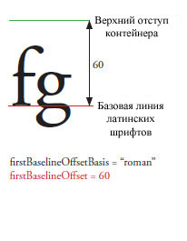
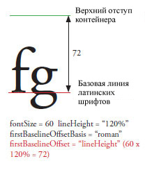
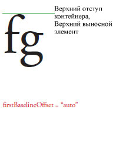
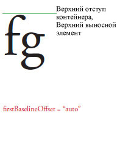

| Пакет | fl.text |
| Класс | public class TLFTextField |
| Наследование | TLFTextField |
| Язык версии: | ActionScript 3.0 |
| Версия продукта: | Flash CS5 |
| Версии среды выполнения: | Flash Player 10, AIR 1.5 |
Создайте объект TLFTextField так же, как и текстовое поле класса TextField. Затем с помощью свойства textFlow назначьте расширенное форматирование из классов TLF. Например:
import fl.text.TLFTextField; import flashx.textLayout.formats.TextLayoutFormat; import flashx.textLayout.elements.TextFlow; var myTLFTextField:TLFTextField = new TLFTextField(); addChild(myTLFTextField); myTLFTextField.x = 10; myTLFTextField.y = 10; myTLFTextField.width = 200 myTLFTextField.height = 100; myTLFTextField.text = "This is my text"; var myFormat:TextLayoutFormat = new TextLayoutFormat(); myFormat.textIndent = 8; myFormat.color = 0x336633; myFormat.fontFamily = "Arial, Helvetica, _sans"; myFormat.fontSize = 24; var myTextFlow:TextFlow = myTLFTextField.textFlow; myTextFlow.hostFormat = myFormat; myTextFlow.flowComposer.updateAllControllers();
Связанные элементы API
 Скрыть унаследованные общедоступные свойства
Скрыть унаследованные общедоступные свойства Показать унаследованные общедоступные свойства
Показать унаследованные общедоступные свойства| Свойство | Определено | ||
|---|---|---|---|
 | accessibilityImplementation : AccessibilityImplementation
Текущая реализация специальных возможностей (AccessibilityImplementation) для данного экземпляра InteractiveObject. | InteractiveObject | |
| accessibilityProperties : AccessibilityProperties
Текущие параметры специальных возможностей для данного экранного объекта. | DisplayObject | |
| alpha : Number
Указывает значение альфа-прозрачности заданного объекта. | DisplayObject | |
| alwaysShowSelection : Boolean
При значении true и отсутствии фокуса на текстовом поле проигрыватель Flash Player выделяет фрагмент в текстовом поле голубым цветом. | TLFTextField | ||
| antiAliasType : String
Тип сглаживания, применяемый для данного текстового поля. | TLFTextField | ||
| autoSize : String
Управляет автоматической настройкой размеров и выравниванием текстовых полей. | TLFTextField | ||
| background : Boolean
Указывает, используется ли в текстовом поле фоновая заливка. | TLFTextField | ||
| backgroundAlpha : Number
Определяет альфа-коэффициент фона текстового поля. | TLFTextField | ||
| backgroundColor : uint
Определяет цвет фона текстового поля. | TLFTextField | ||
| blendMode : String
Значение класса BlendMode, задающее режим наложения. | DisplayObject | |
| blendShader : Shader [только для записи]
Задает затенение, используемое при наложении переднего плана на фон. | DisplayObject | |
| blockProgression : Object
Определяет вертикальное или горизонтальное размещение строки. | TLFTextField | ||
| border : Boolean
Указывает, есть ли у текстового поля рамка. | TLFTextField | ||
| borderAlpha : Number
Определяет значение альфа-коэффициент рамки. | TLFTextField | ||
| borderColor : uint
Определяет цвет рамки текстового поля. | TLFTextField | ||
| borderWidth : Number
Определяет ширину рамки. | TLFTextField | ||
| bottomScrollV : int [только для чтения]
Целое число (индекс, отсчитываемый от 1), соответствующее самой нижней строке, которую видно в заданном текстовом поле. | TLFTextField | ||
| buttonMode : Boolean
Задает режим кнопки данного спрайта. | Sprite | |
| cacheAsBitmap : Boolean
При значении true среда выполнения Flash кэширует внутреннее растровое представление экранного объекта. | DisplayObject | |
| cacheAsBitmapMatrix : Matrix
Если задано ненулевое значение, данный объект Matrix определяет способ визуализации экранного объекта, когда свойство cacheAsBitmap имеет значение true. | DisplayObject | |
| caretIndex : int [только для чтения]
Индекс точки вставки (каре). | TLFTextField | ||
| columnCount : Object
Число текстовых колонок (принимает значение по умолчанию, если в процессе каскада было установлено значение undefined). | TLFTextField | ||
| columnGap : Object
Указывает размер средника между колонками в пикселях (принимает значение по умолчанию, если в процессе каскада было установлено значение undefined). | TLFTextField | ||
| columnWidth : Object
Ширина колонки в пикселях (принимает значение по умолчанию, если в процессе каскада было установлено значение undefined). | TLFTextField | ||
| condenseWhite : Boolean
Логическое значение, определяющее, следует ли удалять лишние разделители (пробелы, разрывы строк и т. д.) в текстовом поле с текстом HTML или разметкой TLF. | TLFTextField | ||
| constructor : Object
Ссылка на объект класса или функцию конструктора для данного экземпляра объекта. | Object | |
| contextMenu : NativeMenu
Определяет контекстное меню, связанное с данным объектом. | InteractiveObject | |
| defaultTextFormat : flash.text:TextFormat
Определяет формат, применяемый к новому вставленному тексту, такому как тексту, введенному пользователем, или тексту, вставленному с использованием метода replaceSelectedText(). | TLFTextField | ||
| direction : String
Задает уровень двунаправленной вложенности текста в блоке по умолчанию. | TLFTextField | ||
| displayAsPassword : Boolean
Показывает, является ли текстовое поле полем пароля. | TLFTextField | ||
| doubleClickEnabled : Boolean
Определяет, получает ли объект события doubleClick. | InteractiveObject | |
| dropTarget : DisplayObject [только для чтения]
Определяет экранный объект, над которым перетаскивается спрайт либо на котором спрайт был отпущен. | Sprite | |
| embedFonts : Boolean
Определяет, должна ли выполняться визуализация с использованием структур встроенных шрифтов. | TLFTextField | ||
| filters : Array
Индексированный массив, который содержит все объекты filter, связанные в настоящий момент с экранным объектом. | DisplayObject | |
| firstBaselineOffset : Object
Указывает позицию базовой линии первой строки в контейнере. | TLFTextField | ||
| focusRect : Object
Задает отображение прямоугольной рамки индикатора фокуса для данного объекта. | InteractiveObject | |
| graphics : Graphics [только для чтения]
Задает объект Graphics, принадлежащий данному спрайту, в котором могут выполняться команды векторного рисования. | Sprite | |
| gridFitType : String
Тип подгонки к сетке, применяемый для этого текстового поля. | TLFTextField | ||
| height : Number
Указывает высоту экранного объекта в пикселях. | DisplayObject | |
| hitArea : Sprite
Определяет другой спрайт в качестве области щелчка для спрайта. | Sprite | |
| htmlText : String
Содержит HTML-представление содержимого текстового поля. | TLFTextField | ||
| length : int [только для чтения]
Число символов в текстовом поле. | TLFTextField | ||
| loaderInfo : LoaderInfo [только для чтения]
Возвращает объект LoaderInfo, содержащий сведения о загрузке файла, к которому принадлежит этот экранный объект. | DisplayObject | |
| mask : DisplayObject
Вызывающий экранный объект маскируется заданным объектом mask. | DisplayObject | |
| maxChars : int
Введенное пользователем максимальное число символов, которое может содержать текстовое поле. | TLFTextField | ||
| maxScrollH : int [только для чтения]
Максимальное значение scrollH. | TLFTextField | ||
| maxScrollV : int [только для чтения]
Максимальное значение scrollV. | TLFTextField | ||
| metaData : Object
Получает объект метаданных экземпляра DisplayObject, если метаданные хранились вместе с экземпляром этого DisplayObject в SWF-файле через тег PlaceObject4. | DisplayObject | |
| mouseChildren : Boolean
Определяет, поддерживают ли дочерние объекты события мыши или других устройств пользовательского ввода. | DisplayObjectContainer | |
| mouseEnabled : Boolean
Определяет, получает ли этот объект события мыши или другого пользовательского ввода. | InteractiveObject | |
| mouseWheelEnabled : Boolean
Логическое значение, определяющее, выполняет ли проигрыватель Flash Player автоматическую прокрутку многострочных текстовых полей, когда пользователь щелкает текстовое поле и вращает колесико мыши. | TLFTextField | ||
| mouseX : Number [только для чтения]
Указывает координату x мыши или курсора пользовательского ввода (в пикселях). | DisplayObject | |
| mouseY : Number [только для чтения]
Указывает координату y мыши или курсора пользовательского ввода (в пикселях). | DisplayObject | |
| multiline : Boolean
Показывает, является ли текстовое поле многострочным. | TLFTextField | ||
| name : String
Указывает имя экземпляра DisplayObject. | DisplayObject | |
| needsSoftKeyboard : Boolean
Определяет, должна ли отображаться виртуальная клавиатура (программная экранная клавиатура), когда этот экземпляр InteractiveObject получает фокус. | InteractiveObject | |
| numChildren : int [только для чтения]
Возвращает число дочерних элементов данного объекта. | DisplayObjectContainer | |
| numLines : int [только для чтения]
Определяет число строк текста в многострочном текстовом поле. | TLFTextField | ||
| opaqueBackground : Object
Определяет, является ли экранный объект непрозрачным с определенным цветом фона. | DisplayObject | |
| paddingBottom : Object
Отступ снизу в пикселях (принимает значение по умолчанию, если в процессе каскада было установлено значение undefined). | TLFTextField | ||
| paddingLeft : Object
Отступ слева в пикселях (принимает значение по умолчанию, если в процессе каскада было установлено значение undefined). | TLFTextField | ||
| paddingRight : Object
Отступ справа в пикселях (принимает значение по умолчанию, если в процессе каскада было установлено значение undefined). | TLFTextField | ||
| paddingTop : Object
Отступ сверху в пикселях (принимает значение по умолчанию, если в процессе каскада было установлено значение undefined). | TLFTextField | ||
| parent : DisplayObjectContainer [только для чтения]
Указывает объект DisplayObjectContainer, содержащий данный экранный объект. | DisplayObject | |
| pixelMaxScrollV : int [только для чтения]
Максимальное значение pixelScrollV. | TLFTextField | ||
| pixelScrollV : int
Вертикальное положение текста в текстовом поле в пикселях, в отличие от scrollV, значение которого исчисляется в линиях. | TLFTextField | ||
| restrict : String
Определяет набор символов, которые могут быть введены пользователем в текстовом поле. | TLFTextField | ||
| root : DisplayObject [только для чтения]
В случае с экранным объектом в загруженном SWF-файле свойством root является самый верхний экранный объект в части структуры дерева списка отображения, представленной этим SWF-файлом. | DisplayObject | |
| rotation : Number
Указывает поворот экземпляра DisplayObject относительно его исходной ориентации (в градусах). | DisplayObject | |
| rotationX : Number
Обозначает поворот в градусах по оси x экземпляра DisplayObject относительно исходной ориентации по трехмерному вышестоящему контейнеру. | DisplayObject | |
| rotationY : Number
Обозначает угол поворота в градусах по оси у экземпляра DisplayObject относительно исходной ориентации по трехмерному родительскому контейнеру. | DisplayObject | |
| rotationZ : Number
Обозначает поворот в градусах по оси z экземпляра DisplayObject от исходной ориентации относительно трехмерного родительского контейнера. | DisplayObject | |
| scale9Grid : Rectangle
Текущая активная сетка масштабирования. | DisplayObject | |
| scaleX : Number
Указывает горизонтальное масштабирование объекта от точки регистрации (в процентах). | DisplayObject | |
| scaleY : Number
Указывает вертикальное масштабирование объекта от точки регистрации (в процентах). | DisplayObject | |
| scaleZ : Number
Указывает глубину масштабирования объекта (в процентах) относительно точки регистрации этого объекта. | DisplayObject | |
| scrollH : int
Текущее положение горизонтальной прокрутки. | TLFTextField | ||
| scrollRect : Rectangle
Прямоугольная область прокрутки экранного объекта. | DisplayObject | |
| scrollV : int
Вертикальное положение текста в текстовом поле. | TLFTextField | ||
| selectable : Boolean
Логическое значение, определяющее, можно ли выбрать текстовое поле. | TLFTextField | ||
| selectionBeginIndex : int [только для чтения]
Отсчитываемое от нуля значение индекса для первого символа в текущем выделенном фрагменте. | TLFTextField | ||
| selectionEndIndex : int [только для чтения]
Отсчитываемое от нуля значение индекса для последнего символа в текущем выделенном фрагменте. | TLFTextField | ||
| sharpness : Number
Резкость неприменима к текстовым полям TLF. | TLFTextField | ||
| softKeyboard : String
Управляет внешним видом программной клавиатуры. | InteractiveObject | |
| softKeyboardInputAreaOfInterest : Rectangle
Определяет область, которая должна оставаться на экране при отображении программной клавиатуры (недоступна в iOS). | InteractiveObject | |
| soundTransform : flash.media:SoundTransform
Управляет звуком в данном спрайте. | Sprite | |
| stage : Stage [только для чтения]
Класс Stage экранного объекта. | DisplayObject | |
| styleSheet : StyleSheet
Таблицы стилей для TLF TextField. | TLFTextField | ||
| tabChildren : Boolean
Определяет, включен ли переход между нижестоящими элементами объекта с помощью клавиши Tab. | DisplayObjectContainer | |
| tabEnabled : Boolean
Определяет, включен ли переход к этому объекту с помощью клавиши Tab. | InteractiveObject | |
| tabIndex : int
Задает последовательность перехода между объектами в SWF-файле. | InteractiveObject | |
| text : String
Строка, представляющая текущий текст в текстовом поле. | TLFTextField | ||
| textColor : uint
Цвет текста в текстовом поле (в шестнадцатеричном формате). | TLFTextField | ||
| textFlow : flashx.textLayout.elements:TextFlow
Используйте это свойство, чтобы назначить экземпляру TLFTextField форматирование из классов TLF в пакетах flashx. | TLFTextField | ||
| textHeight : Number [только для чтения]
Высота текста в пикселях. | TLFTextField | ||
| textSnapshot : flash.text:TextSnapshot [только для чтения]
Возвращает объект TextSnapshot для данного экземпляра DisplayObjectContainer. | DisplayObjectContainer | |
| textWidth : Number [только для чтения]
Ширина текста в пикселях. | TLFTextField | ||
| thickness : Number
Свойство толщины неприменимо к TLFTextField. | TLFTextField | ||
| tlfMarkup : String
Задает или получает разметку TLF текста в текстовом поле TLF. | TLFTextField | ||
| transform : flash.geom:Transform
Объект со свойствами, относящимися к матрице, преобразованию цвета и пиксельным границам экранного объекта. | DisplayObject | |
| type : String
Тип текстового поля. | TLFTextField | ||
| useHandCursor : Boolean
Логическое значение, определяющее, должен ли отображаться курсор в виде руки при наведении указателя мыши на спрайт, в котором свойство buttonMode имеет значение true. | Sprite | |
| useRichTextClipboard : Boolean
Указывает, следует ли копировать в буфер обмена текст вместе с форматированием. | TLFTextField | ||
| verticalAlign : String
Выравнивание по вертикали (принимает значение по умолчанию, если в процессе каскада было установлено значение undefined). | TLFTextField | ||
| visible : Boolean
Определяет видимость экранного объекта. | DisplayObject | |
| width : Number
Указывает ширину экранного объекта в пикселях. | DisplayObject | |
| wordWrap : Boolean
Логическое значение, определяющее применение переноса по словам к текстовому полю. | TLFTextField | ||
| x : Number
Указывает координату x экземпляра DisplayObject, связанную с локальными координатами родительского DisplayObjectContainer. | DisplayObject | |
| y : Number
Указывает координату y экземпляра DisplayObject, связанную с локальными координатами родительского DisplayObjectContainer. | DisplayObject | |
| z : Number
Указывает положение по оси z экземпляра DisplayObject относительно трехмерного родительского контейнера. | DisplayObject | |
| Метод | Определено | ||
|---|---|---|---|
Конструктор для объектов TLFTextField. | TLFTextField | ||
|
Добавляет экземпляр дочернего элемента DisplayObject к экземпляру DisplayObjectContainer. | DisplayObjectContainer | |
|
Добавляет экземпляр дочернего элемента DisplayObject к экземпляру DisplayObjectContainer. | DisplayObjectContainer | |
| addEventListener(type:String, listener:Function, useCapture:Boolean = false, priority:int = 0, useWeakReference:Boolean = false):void
Регистрирует объект прослушивателя события на объекте EventDispatcher для получения прослушивателем уведомления о событии. | EventDispatcher | |
Добавляет строку, указанную параметром newText, в конец текста в текстовом поле. | TLFTextField | ||
|
Показывает, могут ли ограничения безопасности привести к пропуску каких-либо экранных объектов в списке, возвращаемом в результате вызова метода DisplayObjectContainer.getObjectsUnderPoint() с заданной точкой point. | DisplayObjectContainer | |
|
Определяет, является ли указанный объект отображения дочерним объектом экземпляра DisplayObjectContainer или самим экземпляром. | DisplayObjectContainer | |
|
Посылает событие в поток событий. | EventDispatcher | |
|
Возвращает прямоугольник, определяющий область объекта отображения, которая относится к системе координат объекта targetCoordinateSpace. | DisplayObject | |
Возвращает прямоугольник, который является ограничительным блоком символа. | TLFTextField | ||
Возвращает значение индекса, отсчитываемое от нуля, для символа в точке, определенной параметрами x и y. | TLFTextField | ||
|
Возвращает экземпляр дочернего экранного объекта, существующий в заданной позиции индекса. | DisplayObjectContainer | |
|
Возвращает экземпляр дочернего экранного объекта с заданным именем. | DisplayObjectContainer | |
|
Возвращает позицию индекса для экземпляра DisplayObject child. | DisplayObjectContainer | |
Получив индекс символа, возвращает индекс первого символа в том же абзаце. | TLFTextField | ||
Возвращает ссылку DisplayObject для данного идентификатора, изображения или SWF-файла, добавленного в текстовое поле с форматированием HTML с помощью тега <img>. | TLFTextField | ||
Возвращает значение индекса, отсчитываемое от нуля, для строки в точке с координатами x и y. | TLFTextField | ||
Отсчитываемое от нуля значение индекса для строки, которая содержит символ, заданный параметром charIndex. | TLFTextField | ||
Возвращает число символов в заданной строке текста. | TLFTextField | ||
Возвращает данные метрик для заданной строки текста. | TLFTextField | ||
Возвращает индекс первого символа в строке, заданной параметром lineIndex. | TLFTextField | ||
Возвращает текст строки, заданной параметром lineIndex. | TLFTextField | ||
|
Возвращает массив объектов, расположенных ниже указанной позиции и являющихся дочерними объектами любого уровня для данного экземпляра DisplayObjectContainer. | DisplayObjectContainer | |
Используя полученный индекс символа, возвращает длину абзаца, содержащего этот символ. | TLFTextField | ||
|
Возвращает прямоугольник, определяющий границу объекта отображения по системе координат, определенной параметром targetCoordinateSpace за исключением линий фигур. | DisplayObject | |
Возвращает объект TextFormat, содержащий данные о форматировании для фрагмента текста, заданного параметрами beginIndex и endIndex. | TLFTextField | ||
|
Преобразует объект Point из координат рабочей области (глобальных) в координаты отображаемого объекта (локальные). | DisplayObject | |
|
Преобразует двумерный объект Point из координат рабочей области (глобальных) в координаты экранного трехмерного объекта (локальные). | DisplayObject | |
|
Проверяет, имеет ли объект EventDispatcher прослушиватели, зарегистрированные для определенного типа события. | EventDispatcher | |
|
Показывает, определено ли заданное свойство для объекта. | Object | |
|
Вычисляет ограничительную рамку экранного объекта, чтобы определить, не перекрывает и не пересекает ли она ограничительную рамку экранного объекта obj. | DisplayObject | |
|
Вычисляет экранный объект, чтобы определить, перекрывает ли он точку, заданную координатами x и y, или пересекает ее. | DisplayObject | |
Возвращает значение true, если доступен встроенный шрифт с указанными свойствами fontName и fontStyle, где Font.fontType — это flash.text.FontType.EMBEDDED_CFF. | TLFTextField | ||
|
Показывает, есть ли экземпляр класса Object в цепи прототипов объекта, заданного в качестве параметра. | Object | |
|
Преобразует трехмерный объект point из координат трехмерного экранного объекта (локальных) в двухмерный объект point с координатами рабочей области (глобальными). | DisplayObject | |
|
Преобразует объект Point из координат экранного объекта (локальных) в координаты рабочей области (глобальные). | DisplayObject | |
|
Показывает наличие заданного свойства и его перечисляемость. | Object | |
|
Удаляет заданный объект child DisplayObject из списка дочерних элементов экземпляра DisplayObjectContainer. | DisplayObjectContainer | |
|
Удаляет дочерний DisplayObject из заданной позиции индекса в списке дочерних элементов DisplayObjectContainer. | DisplayObjectContainer | |
|
Удаляет все дочерние экземпляры DisplayObject из списка дочерних элементов экземпляра DisplayObjectContainer. | DisplayObjectContainer | |
|
Удаляет прослушиватель из объекта EventDispatcher. | EventDispatcher | |
Заменяет текущий выделенный фрагмент содержимым параметра value. | TLFTextField | ||
Заменяет диапазон символов, заданный параметрами beginIndex и endIndex, содержанием параметра newText. | TLFTextField | ||
|
Вызывает виртуальную клавиатуру. | InteractiveObject | |
|
Изменяет положение существующего дочернего элемента в DisplayObjectContainer. | DisplayObjectContainer | |
|
Задает доступность динамического свойства для операций цикла. | Object | |
Задает способ разметки текста с помощью индексов первого и последнего символов, которые указываются параметрами beginIndex и endIndex | TLFTextField | ||
Применяет форматирование текста, заданное параметром format, к указанному содержимому текстового поля. | TLFTextField | ||
|
Позволяет пользователю перетаскивать заданный спрайт (растровый графический объект, легко перемещаемый по экрану). | Sprite | |
|
Позволяет перетаскивать указанный спрайт на устройстве с сенсорным экраном. | Sprite | |
|
Рекурсивно останавливает выполнение временной шкалы всех фрагментов MovieClip, размещенных в корне этого объекта. | DisplayObjectContainer | |
|
Завершает метод startDrag(). | Sprite | |
|
Завершает выполнение метода startTouchDrag(), используется для устройств с сенсорным экраном. | Sprite | |
|
Меняет местами (в порядке «от начала к концу») два заданных дочерних объекта. | DisplayObjectContainer | |
|
Меняет местами (в порядке «от начала к концу») дочерние объекты, расположенные в двух заданных позициях индекса в списке дочерних элементов. | DisplayObjectContainer | |
|
Возвращает строковое представление этого объекта, отформатированного в соответствии со стандартами, принятыми для данной локали. | Object | |
|
Возвращает строковое представление заданного объекта. | Object | |
|
Возвращает элементарное значение заданного объекта. | Object | |
|
Проверяет, зарегистрирован ли прослушиватель события для указанного типа события с данным объектом EventDispatcher или любым его предшественником. | EventDispatcher | |
| Событие | Сводка | Определено | ||
|---|---|---|---|---|
| [многоадресное событие] Отправляется, когда проигрыватель Flash Player или приложение AIR перемещается в фокус операционной системы и становится активным. | EventDispatcher | ||
| Отправляется, когда экранный объект добавляется в список отображения. | DisplayObject | ||
| Отправляется, когда экранный объект добавляется к списку отображения на монтажном столе либо непосредственно, либо путем добавления поддерева, содержащего экранный объект. | DisplayObject | ||
| Отправляется после изменения значения элемента управления, в отличие от события textInput, которое отправляется перед изменением значения. | TLFTextField | |||
| Отправляется, когда пользователь выбирает команду «Удалить» из контекстного меню текста. | InteractiveObject | ||
| Отправляется, когда пользователь нажимает и отпускает главную кнопку на указывающем устройстве над одним и тем же объектом InteractiveObject. | InteractiveObject | ||
| Отправляется, когда жест пользователя вызывает контекстное меню, связанное с данным интерактивным объектом в приложении AIR. | InteractiveObject | ||
| Отправляется, когда пользователь активирует комбинацию клавиш быстрого вызова, используемую на данной платформе для операции «Копировать», или выбирает команду «Копировать» из контекстного меню. | InteractiveObject | ||
| Отправляется, когда пользователь активирует комбинацию клавиш быстрого вызова, используемую на данной платформе для операции «Вырезать», или выбирает команду «Вырезать» из контекстного меню. | InteractiveObject | ||
| [многоадресное событие] Отправляется, когда проигрыватель Flash Player или приложение AIR теряет фокус системы и становится неактивным. | EventDispatcher | ||
| Отправляется, когда пользователь дважды нажимает и отпускает главную кнопку на указывающем устройстве над одним и тем же объектом InteractiveObject, а флаг doubleClickEnabled для этого объекта имеет значение true. | InteractiveObject | ||
| [многоадресное событие] Отправляется, когда точка воспроизведения переходит в новый кадр. | DisplayObject | ||
| [многоадресное событие] Отправляется, когда точка воспроизведения покидает текущий кадр. | DisplayObject | ||
| Отправляется после того, как экранный объект перемещается в фокус. | InteractiveObject | ||
| Отправляется после того, как экранный объект теряет фокус. | InteractiveObject | ||
| [многоадресное событие] Отправляется после завершения работы конструкторов экранных объектов кадра до выполнения сценариев кадра. | DisplayObject | ||
| Отправляется, когда пользователь создает точку контакта вдоль края сенсорной поверхности с помощью экземпляра InteractiveObject (например, нажатие по краю сенсорной поверхности на пульте Siri Remote для Apple TV). Некоторые устройства также могут интерпретировать этот контакт как комбинацию нескольких событий касания. | InteractiveObject | ||
| Отправляется, когда пользователь наживает две точки контакта над одним экземпляром InteractiveObject на устройстве с сенсорным экраном (например, двумя пальцами нажимает точки над экранным объектом и отпускает их при использовании мобильного телефона или планшетного компьютера с сенсорным экраном). | InteractiveObject | ||
| Отправляется, когда пользователь перемещает точку контакта с экземпляром InteractiveObject на устройстве с сенсорным экраном (например, касается пальцем и проводит им слева направо над экранным объектом при использовании мобильного телефона или планшетного компьютера с сенсорным экраном). | InteractiveObject | ||
| Отправляется, когда пользователь выполняет жест поворота в точке контакта с экземпляром InteractiveObject (например, касание двумя пальцами и их вращение над экранным объектом при использовании мобильного телефона или планшетного компьютера с сенсорным экраном). | InteractiveObject | ||
| Отправляется, когда пользователь выполняет жест выделения в точке контакта с экземпляром InteractiveObject (например, касание экрана тремя пальцами и их параллельное перемещение над экранным объектом при использовании мобильного телефона или планшетного компьютера с сенсорным экраном). | InteractiveObject | ||
| Отправляется, когда пользователь создает точку контакта с экземпляром InteractiveObject, а затем касается сенсорного экрана (например, касается экранного объекта несколькими пальцами, чтобы открыть меню, а затем касается одним пальцем для выбора нужного элемента меню при использовании мобильного телефона или планшетного компьютера с сенсорным экраном). | InteractiveObject | ||
| Отправляется, когда пользователь выполняет жест увеличения в точке контакта с экземпляром InteractiveObject (например, касание экрана двумя пальцами и их быстрое разведение в стороны над экранным объектом при использовании мобильного телефона или планшетного компьютера с сенсорным экраном). | InteractiveObject | ||
| Это событие отправляется любой клиентской программе, которая поддерживает линейный ввод с помощью IME. | InteractiveObject | ||
| Отправляется, когда пользователь нажимает клавишу. | InteractiveObject | ||
| Отправляется, когда пользователь пытается изменить фокус с помощью клавиатуры. | InteractiveObject | ||
| Отправляется, когда пользователь отпускает клавишу. | InteractiveObject | ||
| Передается, когда пользователь щелкает в текстовом поле с поддержкой HTML гиперссылку, в которой URL-адрес начинается с event:. | TLFTextField | |||
| Отправляется, когда пользователь нажимает и отпускает среднюю кнопку указывающего устройства над одним и тем же объектом InteractiveObject. | InteractiveObject | ||
| Отправляется, когда пользователь нажимает среднюю кнопку указывающего устройства над экземпляром InteractiveObject. | InteractiveObject | ||
| Отправляется, когда пользователь отпускает кнопку указывающего устройства над экземпляром InteractiveObject. | InteractiveObject | ||
| Отправляется, когда пользователь нажимает кнопку указывающего устройства над экземпляром InteractiveObject. | InteractiveObject | ||
| Отправляется, когда пользователь пытается изменить фокус с помощью указывающего устройства. | InteractiveObject | ||
| Отправляется, когда пользователь перемещает указывающее устройство в момент, когда курсор находится над объектом InteractiveObject. | InteractiveObject | ||
| Отправляется, когда пользователь перемещает указатель с экземпляра InteractiveObject. | InteractiveObject | ||
| Отправляется, когда пользователь наводит указывающее устройство на экземпляр InteractiveObject. | InteractiveObject | ||
| Отправляется, когда пользователь отпускает кнопку указывающего устройства над экземпляром InteractiveObject. | InteractiveObject | ||
| Отправляется при прокрутке колеса мыши над экземпляром InteractiveObject. | InteractiveObject | ||
| Отправляется инициатором перетаскивания InteractiveObject, когда пользователь завершает жест перетаскивания. | InteractiveObject | ||
| Отправляется целевым объектом InteractiveObject при принятии перетаскиваемого объекта вызовом метода DragManager.acceptDragDrop(). | InteractiveObject | ||
| Отправляется объектом InteractiveObject, когда жест перетаскивания входит в его границы. | InteractiveObject | ||
| Отправляется объектом InteractiveObject, когда жест перетаскивания выходит за границы этого объекта. | InteractiveObject | ||
| Постоянно отправляется объектом InteractiveObject, пока жест перетаскивания остается в пределах его границ. | InteractiveObject | ||
| Отправляется в начале операции перетаскивания объектом InteractiveObject, заданным в качестве инициатора перетаскивания в вызове метода DragManager.doDrag(). | InteractiveObject | ||
| Отправляется во время операции перетаскивания объектом InteractiveObject, заданным в качестве инициатора перетаскивания в вызове метода DragManager.doDrag(). | InteractiveObject | ||
| Отправляется, когда пользователь активирует комбинацию клавиш ускорения, используемую на данной платформе для операции «Вставить», или выбирает команду «Вставить» из контекстного меню. | InteractiveObject | ||
| Отправляется, когда пользователь опускает активное перо ниже установленного для экрана порога обнаружения приближения. | InteractiveObject | ||
| Отправляется, когда пользователь поднимает активное перо, превышая установленный для экрана порог обнаружения приближения. | InteractiveObject | ||
| Отправляется, когда пользователь наводит активное перо на экран, не превышая установленный для экрана порог обнаружения приближения. | InteractiveObject | ||
| Отправляется, когда пользователь переводит активное перо от этого объекта InteractiveObject, не превышая установленный для экрана порог обнаружения приближения. | InteractiveObject | ||
| Отправляется, когда пользователь наводит активное перо непосредственно на этот объект InteractiveObject, не превышая установленный для экрана порог обнаружения приближения. | InteractiveObject | ||
| Отправляется, когда пользователь перемещает активное перо от этого объекта InteractiveObject и любого из его дочерних объектов, не превышая установленный для экрана порог обнаружения приближения. | InteractiveObject | ||
| Отправляется, когда пользователь переводит активное перо на этот объект InteractiveObject из внешней части дерева потомков в списке отображения (не превышая установленный для экрана порог обнаружения близости). | InteractiveObject | ||
| Отправляется, когда пользователь отпускает кнопку позиционирующего устройства после ее нажатия над экземпляром InteractiveObject и последующего перемещения позиционирующего устройства с экземпляра InteractiveObject. | InteractiveObject | ||
| Отправляется перед удалением экранного объекта из списка отображения. | DisplayObject | ||
| Отправляется перед удалением экранного объекта из списка отображения либо напрямую, либо путем удаления поддерева, содержащего экранный объект. | DisplayObject | ||
| [многоадресное событие] Отправляется перед обновлением и визуализацией списка отображения. | DisplayObject | ||
| Отправляется, когда пользователь нажимает и отпускает правую кнопку указывающего устройства над одним и тем же объектом InteractiveObject. | InteractiveObject | ||
| Отправляется, когда пользователь нажимает кнопку указывающего устройства над экземпляром InteractiveObject. | InteractiveObject | ||
| Отправляется, когда пользователь отпускает кнопку указывающего устройства над экземпляром InteractiveObject. | InteractiveObject | ||
| Отправляется, когда пользователь перемещает указатель с экземпляра InteractiveObject. | InteractiveObject | ||
| Отправляется, когда пользователь наводит указывающее устройство на экземпляр InteractiveObject. | InteractiveObject | ||
| Отправляется объектом TextField, когда пользователь выполняет прокрутку. | TLFTextField | |||
| Отправляется, когда пользователь активирует комбинацию клавиш ускорения, используемую на данной платформе для операции «Выделить все», или выбирает команду «Выделить все» из контекстного меню. | InteractiveObject | ||
| Отправляется сразу после того, как программная клавиатура вызывается. | InteractiveObject | ||
| Передается немедленно перед тем, как программная клавиатура появляется на экране. | InteractiveObject | ||
| Передается немедленно после того, как программная клавиатура убирается с экрана. | InteractiveObject | ||
| Отправляется, когда изменяется значение свойства tabChildren объекта. | InteractiveObject | ||
| Отправляется при изменении флага tabEnabled объекта. | InteractiveObject | ||
| Отправляется, когда изменяется значение свойства tabIndex объекта. | InteractiveObject | ||
| Flash Player отправляет событие textInput, когда пользователь вводит один или несколько символов текста. | TLFTextField | |||
| Отправляется, когда пользователь впервые создает точку контакта с сенсорным экраном устройства (например, касается сенсорного экрана мобильного телефона или планшетного компьютера). | InteractiveObject | ||
| Отправляется, когда пользователь убирает точку контакта с сенсорным экраном устройства (например, поднимает палец с сенсорного экрана мобильного телефона или планшетного компьютера). | InteractiveObject | ||
| Отправляется, когда пользователь касается устройства, и продолжает отправляться до тех пор, пока точка контакта не будет удалена. | InteractiveObject | ||
| Отправляется, когда пользователь перемещает точку контакта от экземпляра InteractiveObject на устройстве с сенсорным экраном (например, перетаскивает палец с одного экранного объекта на другой при использовании мобильного телефона или планшетного компьютера с сенсорным экраном). | InteractiveObject | ||
| Отправляется, когда пользователь перемещает точку контакта над экземпляром InteractiveObject на устройстве с сенсорным экраном (например, перетаскивает палец с точки за пределами экранного объекта в точку над ним при использовании мобильного телефона или планшетного компьютера с сенсорным экраном). | InteractiveObject | ||
| Отправляется, когда пользователь удаляет точку контакта из экземпляра InteractiveObject на сенсорном устройстве (например, переводит палец из положения над экранным объектом в точку за пределами экранного объекта на мобильном телефоне или планшете с сенсорным экраном). | InteractiveObject | ||
| Отправляется, когда пользователь перемещает точку контакта над экземпляром InteractiveObject на устройстве с сенсорным экраном (например, перетаскивает палец с точки за пределами экранного объекта в точку над ним при использовании мобильного телефона или планшетного компьютера с сенсорным экраном). | InteractiveObject | ||
| Отправляется, когда пользователь поднимает точку контакта над тем же экземпляром InteractiveObject, с которым был установлен первичный контакт на сенсорном экране (например, нажимает точку на экранном объекте и поднимает палец с той же точки при использовании мобильного телефона или планшетного компьютера с сенсорным экраном). | InteractiveObject | ||
alwaysShowSelection | свойство |
alwaysShowSelection:Boolean| Язык версии: | ActionScript 3.0 |
| Версии среды выполнения: | Flash Player 10, AIR 1.5 |
При значении true и отсутствии фокуса на текстовом поле проигрыватель Flash Player выделяет фрагмент в текстовом поле голубым цветом. При значении false и отсутствии фокуса на текстовом поле проигрыватель Flash Player не выделяет фрагмент в текстовом поле.
Пример:
package
{
import flash.display.Sprite;
import fl.text.TLFTextField;
import flash.text.TextFieldType;
public class TLFTextField_alwaysShowSelection extends Sprite
{
public function TLFTextField_alwaysShowSelection()
{
var label1:TLFTextField = createTLFTextField(0, 20, 200, 20);
label1.text = "This text is selected.";
label1.setSelection(0, 9);
label1.alwaysShowSelection = true;
var label2:TLFTextField = createTLFTextField(0, 50, 200, 20);
label2.text = "Drag to select some of this text.";
}
private function createTLFTextField(x:Number, y:Number, width:Number, height:Number):TLFTextField
{
var result:TLFTextField = new TLFTextField();
result.x = x;
result.y = y;
result.width = width;
result.height = height;
addChild(result);
return result;
}
}
}
Значением по умолчанию является false.
Реализация
public function get alwaysShowSelection():Boolean public function set alwaysShowSelection(value:Boolean):voidСвязанные элементы API
antiAliasType | свойство |
antiAliasType:String| Язык версии: | ActionScript 3.0 |
| Версии среды выполнения: | Flash Player 10, AIR 1.5 |
Тип сглаживания, применяемый для данного текстового поля. Используйте константы flash.text.AntiAliasType для этого свойства. Этим параметром можно управлять, только если используется встроенный шрифт (свойство embedFonts имеет значение true).
В качестве значений этого свойства используйте следующие строковые значения:
| Строковое значение | Описание |
|---|---|
flash.text.AntiAliasType.NORMAL | Применяет обычное сглаживание текста. Оно соответствует типу сглаживания, который использовался в проигрывателе Flash Player 7 и более ранних версиях. |
flash.text.AntiAliasType.ADVANCED | Применяет расширенное сглаживание, которое делает текст более четким. (Эта функция стала доступной в проигрывателе Flash Player 8.) Расширенное сглаживание обеспечивает высококачественную визуализацию шрифтов мелкого размера. Оно оптимально для приложений, в которых используется много мелкого текста. Расширенное сглаживание не рекомендуется для шрифтов больше 48 размера. |
Значением по умолчанию является flash.text.AntiAliasType.NORMAL.
Реализация
public function get antiAliasType():String public function set antiAliasType(value:String):voidСвязанные элементы API
autoSize | свойство |
autoSize:String| Язык версии: | ActionScript 3.0 |
| Версии среды выполнения: | Flash Player 10, AIR 1.5 |
Управляет автоматической настройкой размеров и выравниванием текстовых полей. Допустимые значения констант TextFieldAutoSize: TextFieldAutoSize.NONE (по умолчанию), TextFieldAutoSize.LEFT, TextFieldAutoSize.RIGHT и TextFieldAutoSize.CENTER.
Если autoSize имеет значение TextFieldAutoSize.NONE (по умолчанию) размер не изменяется.
Если autoSize имеет значение TextFieldAutoSize.LEFT, тексту задается выравнивание по левому краю, то есть левое поле текста остается неподвижным и изменение размера одной строки текстового поля осуществляется по правому полю. Если в тексте встречается разрыв строки (например, \n или \r), размер нижнего края также изменяется, чтобы вместить следующую строку текста. Если свойство wordWrap также имеет значение true, размер текстового поля изменяется только по нижнему краю, а правый край остается фиксированным.
Если autoSize имеет значение TextFieldAutoSize.RIGHT, тексту задается выравнивание по правому краю, то есть правое поле текста остается неподвижным и изменение размера одной строки текстового поля осуществляется по левому полю. Если в тексте встречается разрыв строки (например, \n или \r), размер нижнего края также изменяется, чтобы вместить следующую строку текста. Если свойство wordWrap также имеет значение true, размер текстового поля изменяется только по нижнему краю, а левый край остается фиксированным.
Если autoSize имеет значение TextFieldAutoSize.CENTER, текст обрабатывается с учетом выравнивания по центру, то есть изменение размера одной строки текстового поля равномерно распределяется по правому и левому полям. Если в тексте встречается разрыв строки (например, \n или \r), размер нижнего края также изменяется, чтобы вместить следующую строку текста. Если свойство wordWrap также имеет значение true, размер текстового поля изменяется только по нижнему краю, а левый и правый края остаются фиксированными.
Реализация
public function get autoSize():String public function set autoSize(value:String):voidВыдает
ArgumentError — Заданный параметр autoSize не является элементом flash.text.TextFieldAutoSize.
|
Связанные элементы API
background | свойство |
background:Boolean| Язык версии: | ActionScript 3.0 |
| Версии среды выполнения: | Flash Player 10, AIR 1.5 |
Указывает, используется ли в текстовом поле фоновая заливка. При значении true фоновая заливка текстового поля используется. При значении false фоновая заливка текстового поля не используется. Цвет фона для текстового поля задается с помощью свойства backgroundColor.
Значением по умолчанию является false.
Реализация
public function get background():Boolean public function set background(value:Boolean):voidСвязанные элементы API
backgroundAlpha | свойство |
backgroundAlpha:Number| Язык версии: | ActionScript 3.0 |
| Версии среды выполнения: | Flash Player 10, AIR 1.5 |
Определяет альфа-коэффициент фона текстового поля. Альфа-коэффициент фона может иметь любое значение от 0 (прозрачный) и 1 (непрозрачный). Это свойство можно извлечь или задать, даже если в настоящее время фона нет, однако альфа-коэффициент будет видимым, только если свойству background текстового поля задано значение true.
Значением по умолчанию является 1.0.
Реализация
public function get backgroundAlpha():Number public function set backgroundAlpha(value:Number):voidСвязанные элементы API
backgroundColor | свойство |
backgroundColor:uint| Язык версии: | ActionScript 3.0 |
| Версии среды выполнения: | Flash Player 10, AIR 1.5 |
Определяет цвет фона текстового поля. Это свойство можно получить или задать, даже если в настоящее время фона нет, однако цвет будет видимым, только если свойству background текстового поля задано значение true.
Значением по умолчанию является 0xFFFFFF (white).
Реализация
public function get backgroundColor():uint public function set backgroundColor(value:uint):voidСвязанные элементы API
blockProgression | свойство |
blockProgression:Object| Язык версии: | ActionScript 3.0 |
| Версия продукта: | Flash CS5 |
| Версии среды выполнения: | Flash Player 10, AIR 1.5 |
Определяет вертикальное или горизонтальное размещение строки. Строки располагаются либо сверху вниз BlockProgression.TB (используется для горизонтального текста), либо справа налево BlockProgression.RL (используется для вертикального текста).
Допустимые значения: flashx.textLayout.formats.BlockProgression.RL, flashx.textLayout.formats.BlockProgression.TB, flashx.textLayout.formats.FormatValue.INHERIT.
Если значение равно undefined, в процессе каскада это свойство наследует свое значение от вышестоящего элемента. Если ни в одном из вышестоящих элементов данное свойство не установлено, оно получает значение TB.
Значением по умолчанию является undefined (indicates not set).
Реализация
public function get blockProgression():Object public function set blockProgression(value:Object):voidСвязанные элементы API
border | свойство |
border:Boolean| Язык версии: | ActionScript 3.0 |
| Версии среды выполнения: | Flash Player 10, AIR 1.5 |
Указывает, есть ли у текстового поля рамка. При значении true текстовое поле имеет рамку. При значении false текстовое поле не имеет рамки. Цвет рамки задается с помощью свойства borderColor.
Значением по умолчанию является false.
Реализация
public function get border():Boolean public function set border(value:Boolean):voidСвязанные элементы API
borderAlpha | свойство |
borderAlpha:Number| Язык версии: | ActionScript 3.0 |
| Версии среды выполнения: | Flash Player 10, AIR 1.5 |
Определяет значение альфа-коэффициент рамки. Альфа-коэффициент рамки может иметь любое значение от 0 (невидимая) и 1 (видимая). Это свойство можно извлечь или задать, даже если в настоящее время рамки нет, однако альфа-коэффициент будет видимым, только если свойству border текстового поля задано значение true.
Значением по умолчанию является 1.0.
Реализация
public function get borderAlpha():Number public function set borderAlpha(value:Number):voidСвязанные элементы API
borderColor | свойство |
borderColor:uint| Язык версии: | ActionScript 3.0 |
| Версии среды выполнения: | Flash Player 10, AIR 1.5 |
Определяет цвет рамки текстового поля. Значение по умолчанию — 0x000000 (черный). Это свойство можно получить или задать, даже если в настоящее время рамки нет, однако цвет будет видимым, только если свойству border текстового поля задано значение true.
Реализация
public function get borderColor():uint public function set borderColor(value:uint):voidСвязанные элементы API
borderWidth | свойство |
borderWidth:Number| Язык версии: | ActionScript 3.0 |
| Версии среды выполнения: | Flash Player 10, AIR 1.5 |
Определяет ширину рамки. Ширина рамки может иметь любое значение от 1 до 100. Это свойство можно извлечь или задать, даже если в настоящее время рамки нет, однако ширина будет видимой, только если свойству border текстового поля задано значение true.
Ширина рамки учитывается при вычислении ширины или высоты текстового поля. Чтобы получить ширину или высоту контейнера текста без рамки, необходимо дважды вычесть значение borderWidth из значения ширины или высоты.
Например, txtHeight = tlf.height - (2 tlf.borderwidth);.
Значением по умолчанию является 1.
Реализация
public function get borderWidth():Number public function set borderWidth(value:Number):voidСвязанные элементы API
bottomScrollV | свойство |
bottomScrollV:int [только для чтения] | Язык версии: | ActionScript 3.0 |
| Версии среды выполнения: | Flash Player 10, AIR 1.5 |
Целое число (индекс, отсчитываемый от 1), соответствующее самой нижней строке, которую видно в заданном текстовом поле. Представьте, что текстовое поле — это окно на блоке текста. Свойство scrollV представляет собой отсчитываемый от единицы индекс самой верхней видимой строки в окне, а bottomScroll — последнюю видимую строку в окне.
Весь текст между линиями, заданными параметрами scrollV и bottomScrollV в данный момент отображается в текстовом поле.
Реализация
public function get bottomScrollV():intСвязанные элементы API
caretIndex | свойство |
caretIndex:int [только для чтения] | Язык версии: | ActionScript 3.0 |
| Версии среды выполнения: | Flash Player 10, AIR 1.5 |
Индекс точки вставки (каре). Если точка вставки не отображается, значением является положение, которое она бы занимала, если бы поле было в фокусе (обычно это последнее место вставки или 0, если поле не было в фокусе).
Индексы выделенного фрагмента отсчитываются от нуля (например, первая позиция — 0, вторая — 1 и т. д.).
Пример:
package
{
import flash.display.Sprite;
import flash.events.MouseEvent;
import fl.text.TLFTextField;
import flash.text.TextFieldType;
public class TLFTextField_caretIndex extends Sprite
{
public function TLFTextField_caretIndex()
{
var tlf:TLFTextField = createTLFTextField(10, 10, 100, 100);
tlf.wordWrap = true;
tlf.type = TextFieldType.INPUT;
tlf.text = "Click in this text field. Compare the difference between clicking without selecting versus clicking and selecting text.";
tlf.addEventListener(MouseEvent.CLICK, printCursorPosition);
}
private function printCursorPosition(event:MouseEvent):void
{
var tlf:TLFTextField = TLFTextField(event.currentTarget);
trace("caretIndex:", tlf.caretIndex);
trace("selectionBeginIndex:", tlf.selectionBeginIndex);
trace("selectionEndIndex:", tlf.selectionEndIndex);
}
private function createTLFTextField(x:Number, y:Number, width:Number, height:Number):TLFTextField
{
var result:TLFTextField = new TLFTextField();
result.x = x;
result.y = y;
result.width = width;
result.height = height;
addChild(result);
return result;
}
}
}
Реализация
public function get caretIndex():intСвязанные элементы API
columnCount | свойство |
columnCount:Object| Язык версии: | ActionScript 3.0 |
| Версии среды выполнения: | Flash Player 10, AIR 1.5 |
Число текстовых колонок (принимает значение по умолчанию, если в процессе каскада было установлено значение undefined). Количество колонок отменяет другие параметры настройки колонки. Значение представляет собой целое число или FormatValue.AUTO, если не указано. Если columnCount не указан, то columnWidth используется для создания максимального количества колонок в контейнере.
Допустимые строковые значения: flashx.textLayout.formats.FormatValue.AUTO, flashx.textLayout.formats.FormatValue.INHERIT, а также с ints от 1 до 50.
Если значение undefined, в процессе каскада свойство получает значение AUTO.
Значением по умолчанию является undefined (indicates not set).
Реализация
public function get columnCount():Object public function set columnCount(value:Object):voidСвязанные элементы API
columnGap | свойство |
columnGap:Object| Язык версии: | ActionScript 3.0 |
| Версии среды выполнения: | Flash Player 10, AIR 1.5 |
Указывает размер средника между колонками в пикселях (принимает значение по умолчанию, если в процессе каскада было установлено значение undefined).
Допускаются значения и числа от 0 до 1000, а также flashx.textLayout.formats.FormatValue.INHERIT.
Если undefined, в процессе каскада свойство получает значение 20.
Значением по умолчанию является undefined (indicates not set).
Реализация
public function get columnGap():Object public function set columnGap(value:Object):voidСвязанные элементы API
columnWidth | свойство |
columnWidth:Object| Язык версии: | ActionScript 3.0 |
| Версия продукта: | Flash CS5 |
| Версии среды выполнения: | Flash Player 10, AIR 1.5 |
Ширина колонки в пикселях (принимает значение по умолчанию, если в процессе каскада было установлено значение undefined). Если указана ширина колонок, но не указано их количество, то TextLayout создает максимально возможное количество колонок этой ширины при заданной ширине контейнера и настройке columnGap. Все оставшееся пространство будет располагаться за последней колонкой. Значение представляет собой число.
Допустимые строковые значения: flashx.textLayout.formats.FormatValue.AUTO, flashx.textLayout.formats.FormatValue.INHERIT, а также числа от 0 до 8000.
Если значение undefined, в процессе каскада свойство получает значение AUTO.
Значением по умолчанию является undefined (indicates not set).
Реализация
public function get columnWidth():Object public function set columnWidth(value:Object):voidСвязанные элементы API
condenseWhite | свойство |
condenseWhite:Boolean| Язык версии: | ActionScript 3.0 |
| Версия продукта: | Flash CS5 |
| Версии среды выполнения: | Flash Player 10, AIR 1.5 |
Логическое значение, определяющее, следует ли удалять лишние разделители (пробелы, разрывы строк и т. д.) в текстовом поле с текстом HTML или разметкой TLF. Значение по умолчанию false. Свойство condenseWhite влияет только на разметку TLF или текст, определенный с помощью свойства htmlText, а не с помощью свойства text. Если текст определен посредством свойства text, condenseWhite игнорируется.
Если свойству condenseWhite присваивается значение true, необходимо использовать стандартные теги HTML (например, <br> и <p>), чтобы поместить в текстовое поле разрывы строк.
Установите свойство condenseWhite перед свойством htmlText или tlfMarkup.
Следующий пример демонстрирует использование свойства condenseWhite для удаления лишних пробелов из содержимого tlfMarkup.
import fl.text.TLFTextField; var my_tlf:TLFTextField = new TLFTextField(); my_tlf.autoSize = 'left'; // This line removes white space from tlfMarkup my_tlf.condenseWhite = true; addChild(my_tlf); var my_markup:String = '<TextFlow xmlns="http://ns.adobe.com/textLayout/2008">' + ' <p>' + ' <span>Here is the first span.</span>' + ' \n' + ' <span>And here is the second span.</span>' + ' </p>' + '</TextFlow>'; my_tlf.tlfMarkup = my_markup;
Значением по умолчанию является false.
Реализация
public function get condenseWhite():Boolean public function set condenseWhite(value:Boolean):voidСвязанные элементы API
defaultTextFormat | свойство |
defaultTextFormat:flash.text:TextFormat| Язык версии: | ActionScript 3.0 |
| Версия продукта: | Flash CS5 |
| Версии среды выполнения: | Flash Player 10, AIR 1.5 |
Определяет формат, применяемый к новому вставленному тексту, такому как тексту, введенному пользователем, или тексту, вставленному с использованием метода replaceSelectedText().
Реализация
public function get defaultTextFormat():flash.text:TextFormat public function set defaultTextFormat(value:flash.text:TextFormat):voidСвязанные элементы API
direction | свойство |
direction:String| Язык версии: | ActionScript 3.0 |
| Версия продукта: | Flash CS5 |
| Версии среды выполнения: | Flash Player 10, AIR 1.5 |
Задает уровень двунаправленной вложенности текста в блоке по умолчанию. Направление чтения слева направо, как в сценариях с латинским стилем, или справа налево, как в сценариях с арабским или еврейским. Это свойство также влияет на направление колонки, когда оно применяется на уровне контейнера. Колонки могут быть расположены либо слева направо, либо справа налево, так же, как и текст. Примеры:

Допустимые значения: flashx.textLayout.formats.Direction.LTR, flashx.textLayout.formats.Direction.RTL, flashx.textLayout.formats.FormatValue.INHERIT.
Если значение равно undefined, в процессе каскада это свойство наследует свое значение от вышестоящего элемента. Если ни в одном из вышестоящих элементов данное свойство не установлено, оно получает значение LTR.
Значением по умолчанию является undefined (indicates not set).
Реализация
public function get direction():String public function set direction(value:String):voidСвязанные элементы API
displayAsPassword | свойство |
displayAsPassword:Boolean| Язык версии: | ActionScript 3.0 |
| Версия продукта: | Flash CS5 |
| Версии среды выполнения: | Flash Player 10, AIR 1.5 |
Показывает, является ли текстовое поле полем пароля. Если это свойство имеет значение true, текстовое поле обрабатывается как поле ввода пароля и скрывает вводимые символы, показывая звездочки вместо действительных символов. При значении false текстовое поле не обрабатывается как поле пароля. В режиме пароля команды «Вырезать» и «Копировать», а также соответствующие им комбинации клавиш не работают. Этот механизм защиты не позволяет недобросовестным пользователям использовать комбинации клавиш с целью получения пароля на компьютере, оставленном без присмотра.
Значением по умолчанию является false.
Реализация
public function get displayAsPassword():Boolean public function set displayAsPassword(value:Boolean):voidembedFonts | свойство |
embedFonts:Boolean| Язык версии: | ActionScript 3.0 |
| Версия продукта: | Flash CS5 |
| Версии среды выполнения: | Flash Player 10, AIR 1.5 |
Определяет, должна ли выполняться визуализация с использованием структур встроенных шрифтов. При значении false проигрыватель Flash Player визуализирует текстовое поле с использованием шрифтов устройства.
Если свойству embedFonts текстового поля задано значение true, необходимо указать для текста шрифт с помощью свойства font объекта TextFormat, примененного к текстовому полю. Если указанный шрифт не встроен в SWF-файл, текст отображается с использованием резервного шрифта.
Значением по умолчанию является false.
Реализация
public function get embedFonts():Boolean public function set embedFonts(value:Boolean):voidСвязанные элементы API
firstBaselineOffset | свойство |
firstBaselineOffset:Object| Язык версии: | ActionScript 3.0 |
| Версия продукта: | Flash CS5 |
| Версии среды выполнения: | Flash Player 10, AIR 1.5 |
Указывает позицию базовой линии первой строки в контейнере. Базовая линия, к которой относится это свойство, зависит от локали на уровне контейнера. Для японского и китайского языка это — TextBaseline.IDEOGRAPHIC_BOTTOM; для всех других языков — TextBaseline.ROMAN. Смещение от верхнего отступа (или правого отступа, если blockProgression имеет значение RL) контейнера до базовой линии первой строки может иметь значение BaselineOffset.ASCENT, что означает равное верхнему выносному элементу строки, либо BaselineOffset.LINE_HEIGHT, что означает равное высоте этой первой строки, либо любое фиксированное число для указания абсолютного расстояния. Значение BaselineOffset.AUTO выравнивает верхний выносной элемент строки по верхнему отступу контейнера.
 

Допустимые строковые значения: flashx.textLayout.formats.BaselineOffset.AUTO, flashx.textLayout.formats.BaselineOffset.ASCENT, flashx.textLayout.formats.BaselineOffset.LINE_HEIGHT, flashx.textLayout.formats.FormatValue.INHERIT и числа от 0 до 1000.
Если значение равно undefined, в процессе каскада это свойство наследует свое значение от вышестоящего элемента. Если ни в одном из вышестоящих элементов данное свойство не установлено, оно получает значение AUTO.
Значением по умолчанию является undefined (indicates not set).
Реализация
public function get firstBaselineOffset():Object public function set firstBaselineOffset(value:Object):voidСвязанные элементы API
gridFitType | свойство |
gridFitType:String| Язык версии: | ActionScript 3.0 |
| Версия продукта: | Flash CS5 |
| Версии среды выполнения: | Flash Player 10, AIR 1.5 |
Тип подгонки к сетке, применяемый для этого текстового поля. Это свойство применяется, только если свойство flash.text.AntiAliasType текстового поля имеет значение flash.text.AntiAliasType.ADVANCED.
Используемый тип подгонки к сетке определяет, подгоняет ли проигрыватель Flash Player жирные горизонтальные или вертикальные линии к пиксельной или субпиксельной сетке, или совсем не выполняет подгонку.
Для свойства flash.text.GridFitType можно использовать следующие строковые значения.
| Строковое значение | Описание |
|---|---|
flash.text.GridFitType.NONE | Задает отсутствие подгонки к сетке. Горизонтальные и вертикальные линии в глифах не подгоняются к пиксельной сетке. Этот параметр рекомендуется для анимации или для шрифтов большого размера. |
flash.text.GridFitType.PIXEL | Задает подгонку жирных горизонтальных и вертикальных линий к пиксельной сетке. Этот параметр применяется только к текстовым полям с выравниванием по левому краю. Для использования этого параметра свойство flash.display.AntiAliasType текстового поля должно иметь значение flash.text.AntiAliasType.ADVANCED. Этот параметр, как правило, дает максимальную четкость для текста с выравниванием по левому краю. |
flash.text.GridFitType.SUBPIXEL | Задает подгонку горизонтальных и вертикальных линий к субпиксельной сетке на ЖК-мониторе. Для использования этого параметра свойство flash.text.AntiAliasType текстового поля должно иметь значение flash.text.AntiAliasType.ADVANCED. Параметр flash.text.GridFitType.SUBPIXEL обычно целесообразен для динамического текста с выравниванием по правому краю или по центру и в некоторых случаях позволяет найти оптимальный баланс качеством анимации и текста. |
Значением по умолчанию является flash.text.GridFitType.PIXEL.
Реализация
public function get gridFitType():String public function set gridFitType(value:String):voidСвязанные элементы API
htmlText | свойство |
htmlText:String| Язык версии: | ActionScript 3.0 |
| Версия продукта: | Flash CS5 |
| Версии среды выполнения: | Flash Player 10, AIR 1.5 |
Содержит HTML-представление содержимого текстового поля.
Экземпляры TLFTextField поддерживают следующие теги HTML:
| Тег | Описание |
|---|---|
| Тег привязки |
Тег <a> создает гипертекстовую ссылку и поддерживает следующие атрибуты.
|
| Тег полужирного начертания |
Тег <b> изменяет начертание текста на полужирное. Для используемого шрифта должно быть доступно полужирное написание.
|
| Тег разрыва |
Тег <br> создает разрыв строки в тексте.
|
| Тег шрифта |
Тег <font> задает шрифт или список шрифтов для отображения текста. Тег шрифта поддерживает следующие атрибуты.
|
| Тег изображения |
Тег <img> позволяет встраивать в текст внешние файлы изображений (JPEG, GIF, PNG), SWF-файлы и фрагменты роликов.
Тег
Примечание. В отличие от класса TextField, следующие атрибуты не поддерживаются: |
| Тег курсива |
Тег <i> отображает заключенный в него текст курсивом. Для используемого шрифта должно быть доступно курсивное начертание.
|
| Тег элемента списка | Примечание. В отличие от класса TextField, тег List item не поддерживается. |
| Тег абзаца |
Тег <p> создает новый абзац. Тег <p> поддерживает следующие атрибуты.
|
| Тег диапазона |
Тег <span> поддерживает следующие атрибуты:
|
| Тег формата текста |
Тег Тег
|
| Тег подчеркивания |
Тег <u> подчеркивает заключенный в него текст.
|
Проигрыватель Flash Player также поддерживает явные коды символов, такие как & (амперсанд ASCII) и € (символ € в Юникод).
Реализация
public function get htmlText():String public function set htmlText(value:String):voidСвязанные элементы API
length | свойство |
maxChars | свойство |
maxChars:int| Язык версии: | ActionScript 3.0 |
| Версия продукта: | Flash CS5 |
| Версии среды выполнения: | Flash Player 10, AIR 1.5 |
Введенное пользователем максимальное число символов, которое может содержать текстовое поле. Сценарий может вставить больше текста, чем допускает maxChars. Свойство maxChars указывает только количество символов, которые может ввести пользователь. Если это свойство имеет значение 0, пользователь может ввести любое количество символов.
Значением по умолчанию является 0.
Реализация
public function get maxChars():int public function set maxChars(value:int):voidmaxScrollH | свойство |
maxScrollV | свойство |
mouseWheelEnabled | свойство |
mouseWheelEnabled:Boolean| Язык версии: | ActionScript 3.0 |
| Версия продукта: | Flash CS5 |
| Версии среды выполнения: | Flash Player 10, AIR 1.5 |
Логическое значение, определяющее, выполняет ли проигрыватель Flash Player автоматическую прокрутку многострочных текстовых полей, когда пользователь щелкает текстовое поле и вращает колесико мыши. Это свойство целесообразно, если требуется предотвратить прокрутку текстового поля с помощью колесика мыши или внедрить собственную функцию прокрутки текста.
Значением по умолчанию является true.
Реализация
public function get mouseWheelEnabled():Boolean public function set mouseWheelEnabled(value:Boolean):voidmultiline | свойство |
multiline:Boolean| Язык версии: | ActionScript 3.0 |
| Версия продукта: | Flash CS5 |
| Версии среды выполнения: | Flash Player 10, AIR 1.5 |
Показывает, является ли текстовое поле многострочным. Если значение — true, текстовое поле многострочное, а если значение — false, то однострочное. В поле типа TextFieldType.INPUT значение multiline определяет, создает ли клавиша Enter новую строку (при значении false нажатие клавиши Enter игнорируется). Если вставить текст в поле TextField со свойством multiline в значении false, новые строки опускаются.
Значением по умолчанию является false.
Реализация
public function get multiline():Boolean public function set multiline(value:Boolean):voidСвязанные элементы API
numLines | свойство |
numLines:int [только для чтения] | Язык версии: | ActionScript 3.0 |
| Версия продукта: | Flash CS5 |
| Версии среды выполнения: | Flash Player 10, AIR 1.5 |
Определяет число строк текста в многострочном текстовом поле. Если свойство wordWrap имеет значение true, то при переносе текста количество строк увеличивается.
Реализация
public function get numLines():intСвязанные элементы API
paddingBottom | свойство |
paddingBottom:Object| Язык версии: | ActionScript 3.0 |
| Версия продукта: | Flash CS5 |
| Версии среды выполнения: | Flash Player 10, AIR 1.5 |
Отступ снизу в пикселях (принимает значение по умолчанию, если в процессе каскада было установлено значение undefined). Пробел между нижним краем контейнера и текстом. Значение представляет собой число.
При горизонтальном тексте в прокручиваемых контейнерах с несколькими колонками в первой и последующих колонках отобразится заполнение в виде пробела в нижней части контейнера, но для просмотра заполнения последней колонки при превышении текстом ширины контейнера придется выполнить прокрутку.
Допускаются значения и числа от 0 до 1000, а также flashx.textLayout.formats.FormatValue.INHERIT.
Если undefined, в процессе каскада свойство получает значение 0.
Значением по умолчанию является undefined (indicates not set).
Реализация
public function get paddingBottom():Object public function set paddingBottom(value:Object):voidСвязанные элементы API
paddingLeft | свойство |
paddingLeft:Object| Язык версии: | ActionScript 3.0 |
| Версия продукта: | Flash CS5 |
| Версии среды выполнения: | Flash Player 10, AIR 1.5 |
Отступ слева в пикселях (принимает значение по умолчанию, если в процессе каскада было установлено значение undefined). Пробел между левым краем контейнера и текстом. Значение представляет собой число.
При вертикальном тексте в прокручиваемых контейнерах с несколькими колонками в первой и последующих колонках отобразится заполнение в виде пробела в конечной части контейнера, но для просмотра заполнения последней колонки при превышении текстом ширины контейнера, придется выполнить прокрутку.
Допускаются значения и числа от 0 до 1000, а также flashx.textLayout.formats.FormatValue.INHERIT.
Если undefined, в процессе каскада свойство получает значение 0.
Значением по умолчанию является undefined (indicates not set).
Реализация
public function get paddingLeft():Object public function set paddingLeft(value:Object):voidСвязанные элементы API
paddingRight | свойство |
paddingRight:Object| Язык версии: | ActionScript 3.0 |
| Версия продукта: | Flash CS5 |
| Версии среды выполнения: | Flash Player 10, AIR 1.5 |
Отступ справа в пикселях (принимает значение по умолчанию, если в процессе каскада было установлено значение undefined). Пробел между правым краем контейнера и текстом. Значение представляет собой число.
Допускаются значения и числа от 0 до 1000, а также flashx.textLayout.formats.FormatValue.INHERIT.
Если undefined, в процессе каскада свойство получает значение 0.
Значением по умолчанию является undefined (indicates not set).
Реализация
public function get paddingRight():Object public function set paddingRight(value:Object):voidСвязанные элементы API
paddingTop | свойство |
paddingTop:Object| Язык версии: | ActionScript 3.0 |
| Версия продукта: | Flash CS5 |
| Версии среды выполнения: | Flash Player 10, AIR 1.5 |
Отступ сверху в пикселях (принимает значение по умолчанию, если в процессе каскада было установлено значение undefined). Пробел между верхним краем контейнера и текстом. Значение представляет собой число.
Допускаются значения и числа от 0 до 1000, а также flashx.textLayout.formats.FormatValue.INHERIT.
Если undefined, в процессе каскада свойство получает значение 0.
Значением по умолчанию является undefined (indicates not set).
Реализация
public function get paddingTop():Object public function set paddingTop(value:Object):voidСвязанные элементы API
passwordCharacter | свойство |
passwordCharacter:String [только для чтения] Определяет или задает символ, используемый для скрытия символов в блоке пароля.
Реализация
tlf_internal function get passwordCharacter():StringpixelMaxScrollV | свойство |
pixelMaxScrollV:int [только для чтения] | Язык версии: | ActionScript 3.0 |
| Версия продукта: | Flash CS5 |
| Версии среды выполнения: | Flash Player 10, AIR 1.5 |
Максимальное значение pixelScrollV. В качестве единиц pixelMaxScrollV используются пиксели, в отличие от свойства maxScrollV, значение которого исчисляется в линиях.
Реализация
public function get pixelMaxScrollV():intpixelScrollV | свойство |
pixelScrollV:int| Язык версии: | ActionScript 3.0 |
| Версия продукта: | Flash CS5 |
| Версии среды выполнения: | Flash Player 10, AIR 1.5 |
Вертикальное положение текста в текстовом поле в пикселях, в отличие от scrollV, значение которого исчисляется в линиях. Свойство pixelScrollV позволяет обеспечить гладкое прокручивание текстового поля до определенного положения.
Реализация
public function get pixelScrollV():int public function set pixelScrollV(value:int):voidСвязанные элементы API
restrict | свойство |
restrict:String| Язык версии: | ActionScript 3.0 |
| Версия продукта: | Flash CS5 |
| Версии среды выполнения: | Flash Player 10, AIR 1.5 |
Определяет набор символов, которые могут быть введены пользователем в текстовом поле. Если свойству restrict присвоено значение null, можно ввести любой символ. Если в качестве значения свойства restrict установлена пустая строка, ввод символов невозможен. Если значение restrict — это строка, состоящая из символов, в текстовое поле можно вводить только символы из этой строки. Строка сканируется слева направо. Диапазон определяется с помощью символа (-). Ограничивается только взаимодействие пользователей; с помощью сценариев в текстовом поле можно ввести любой текст. Это свойство не синхронизируется с параметрами встраивания шрифтов в инспекторе свойств.
Если строка начинается с символа вставки (^), все символы изначально поддерживаются, а последующие символы в строке исключаются из набора поддерживаемых символов. Если строка не начинается с символа вставки (^), символы изначально не поддерживаются, а последующие символы в строке включаются в набор поддерживаемых символов.
В следующем примере в текстовое поле можно вводить только заглавные буквы, пробелы и цифры.
my_txt.restrict = "A-Z 0-9";
В следующем примере включены все символы, но исключены строчные буквы.
my_txt.restrict = "^a-z";
Можно использовать обратную косую черту для ввода символа ^ или -. Допускаются следующие последовательности с обратной косой чертой: \-, \^ или \\. Обратная косая черта должна быть фактическим символом в строке, потому, когда она задана в коде ActionScript, необходимо использовать двойную обратную косую черту. Например, следующий код включает только дефис (-) и символ вставки (^).
my_txt.restrict = "\\-\\^";
Символ ^ может использоваться в любом месте строки для переключения между включенными и исключенными символами. Следующий код включает только заглавные буквы, но исключает заглавную букву Q.
my_txt.restrict = "A-Z^Q";
Для создания строк restrict можно использовать управляющую последовательность \u. Следующий код включает только символы с ASCII 32 (пробел) до ASCII 126 (тильда).
my_txt.restrict = "\u0020-\u007E";
Значением по умолчанию является null.
Реализация
public function get restrict():String public function set restrict(value:String):voidscrollH | свойство |
scrollH:int| Язык версии: | ActionScript 3.0 |
| Версия продукта: | Flash CS5 |
| Версии среды выполнения: | Flash Player 10, AIR 1.5 |
Текущее положение горизонтальной прокрутки. Если свойство scrollH имеет значение 0, текст не прокручивается по горизонтали. Значением этого свойства является целое число, представляющее положение по горизонтали в пикселях.
Единицей измерения горизонтальной прокрутки являются пиксели, а вертикальной — строки. Горизонтальная прокрутка измеряется в пикселях, так как большинство распространенных шрифтов расставляются пропорционально, то есть символы могут иметь разную ширину. Проигрыватель Flash Player выполняет вертикальную прокрутку по строкам, так как пользователи обычно хотят видеть строку текста целиком, а не частично. Даже если в строке используются разные шрифты, ее высота регулируется в соответствии с самым большим используемым шрифтом.
Примечание. Значение свойства scrollH отсчитывается от нуля, а значение свойства scrollV (для вертикальной прокрутки) — от единицы.
Реализация
public function get scrollH():int public function set scrollH(value:int):voidСвязанные элементы API
scrollV | свойство |
scrollV:int| Язык версии: | ActionScript 3.0 |
| Версия продукта: | Flash CS5 |
| Версии среды выполнения: | Flash Player 10, AIR 1.5 |
Вертикальное положение текста в текстовом поле. Свойство scrollV целесообразно для направления пользователей к определенному абзацу в длинном тексте или для создания прокручиваемых текстовых полей.
Единицей измерения вертикальной прокрутки являются строки, а горизонтальной — пиксели. Если первая отображаемая строка является первой строкой в текстовом поле, то свойство scrollV имеет значение 1 (не 0). Горизонтальная прокрутка измеряется в пикселях, так как большинство шрифтов расставляются пропорционально, то есть символы могут иметь разную ширину. Flash выполняет вертикальную прокрутку по строкам, так как пользователи обычно хотят видеть строку текста целиком, а не частично. Даже если строка содержит разные шрифты, ее высота регулируется в соответствии с самым большим используемым шрифтом.
Реализация
public function get scrollV():int public function set scrollV(value:int):voidСвязанные элементы API
selectable | свойство |
selectable:Boolean| Язык версии: | ActionScript 3.0 |
| Версия продукта: | Flash CS5 |
| Версии среды выполнения: | Flash Player 10, AIR 1.5 |
Логическое значение, определяющее, можно ли выбрать текстовое поле. Значение true указывает на то, что текст можно выделить. Свойство selectable управляет возможностью выделения содержимого текстового поля, а не возможностью его редактирования. В отличие от классического динамического текстового поля, или поля вводимого текста, если текстовое поле TLF является редактируемым, оно всегда является выделяемым. Если это свойство имеет значение false и выбран динамический тип ввода, то пользователь не может выделять текст в поле.
Если свойство selectable имеет значение false, содержимое текстового поля не реагирует на команды выделения мыши и клавиатуры, и его нельзя копировать с использованием команды «Копировать». Если свойство selectable имеет значение true, содержимое текстового поля можно выделить с помощью мыши и клавиатуры, и его можно копировать с использованием команды «Копировать».
Значением по умолчанию является true.
Реализация
public function get selectable():Boolean public function set selectable(value:Boolean):voidСвязанные элементы API
selectionBeginIndex | свойство |
selectionBeginIndex:int [только для чтения] | Язык версии: | ActionScript 3.0 |
| Версия продукта: | Flash CS5 |
| Версии среды выполнения: | Flash Player 10, AIR 1.5 |
Отсчитываемое от нуля значение индекса для первого символа в текущем выделенном фрагменте. Например, первый символ имеет индекс 0, второй — индекс 1 и т. д. Если текст не выделен, это свойство является значением caretIndex.
Реализация
public function get selectionBeginIndex():intСвязанные элементы API
selectionEndIndex | свойство |
selectionEndIndex:int [только для чтения] | Язык версии: | ActionScript 3.0 |
| Версия продукта: | Flash CS5 |
| Версии среды выполнения: | Flash Player 10, AIR 1.5 |
Отсчитываемое от нуля значение индекса для последнего символа в текущем выделенном фрагменте. Например, первый символ имеет индекс 0, второй — индекс 1 и т. д. Если текст не выделен, это свойство является значением caretIndex.
Реализация
public function get selectionEndIndex():intСвязанные элементы API
sharpness | свойство |
sharpness:Number| Язык версии: | ActionScript 3.0 |
| Версия продукта: | Flash CS5 |
| Версии среды выполнения: | Flash Player 10, AIR 1.5 |
Резкость неприменима к текстовым полям TLF. Передаваемые значения игнорируются, и всегда возвращается нуль.
Реализация
public function get sharpness():Number public function set sharpness(value:Number):voidstyleSheet | свойство |
styleSheet:StyleSheet| Язык версии: | ActionScript 3.0 |
| Версия продукта: | Flash CS5 |
| Версии среды выполнения: | Flash Player 10, AIR 1.5 |
Таблицы стилей для TLF TextField.
Реализация
public function get styleSheet():StyleSheet public function set styleSheet(value:StyleSheet):voidtext | свойство |
text:String| Язык версии: | ActionScript 3.0 |
| Версия продукта: | Flash CS5 |
| Версии среды выполнения: | Flash Player 10, AIR 1.5 |
Строка, представляющая текущий текст в текстовом поле. Строки разделяются символом возврата каретки (\r, ASCII 13). Это свойство содержит неформатированный текст в текстовом поле без тегов HTML.
Чтобы получить текст в виде HTML, используйте свойство htmlText.
Реализация
public function get text():String public function set text(value:String):voidСвязанные элементы API
textColor | свойство |
textColor:uint| Язык версии: | ActionScript 3.0 |
| Версия продукта: | Flash CS5 |
| Версии среды выполнения: | Flash Player 10, AIR 1.5 |
Цвет текста в текстовом поле (в шестнадцатеричном формате). Шестнадцатеричная система цвета использует шесть знаков для представления цветовых значений. Каждый знак имеет 16 возможных значений или символов. Символы находятся в диапазоне 0 — 9 и затем A — F. Например, черный цвет — это 0x000000, а белый — 0xFFFFFF.
Значением по умолчанию является 0 (0x000000).
Реализация
public function get textColor():uint public function set textColor(value:uint):voidtextFlow | свойство |
textFlow:flashx.textLayout.elements:TextFlow| Язык версии: | ActionScript 3.0 |
| Версия продукта: | Flash CS5 |
| Версии среды выполнения: | Flash Player 10, AIR 1.5 |
Используйте это свойство, чтобы назначить экземпляру TLFTextField форматирование из классов TLF в пакетах flashx. Например:
var myFormat:TextLayoutFormat = new TextLayoutFormat(); myFormat.textIndent = 8; myFormat.color = 0x336633; myFormat.fontFamily = "Arial, Helvetica, _sans"; myFormat.fontSize = 24; var myTextFlow:TextFlow = myTLFTextField.textFlow; myTextFlow.hostFormat = myFormat;
Реализация
public function get textFlow():flashx.textLayout.elements:TextFlow public function set textFlow(value:flashx.textLayout.elements:TextFlow):voidСвязанные элементы API
textHeight | свойство |
textWidth | свойство |
thickness | свойство |
thickness:Number| Язык версии: | ActionScript 3.0 |
| Версия продукта: | Flash CS5 |
| Версии среды выполнения: | Flash Player 10, AIR 1.5 |
Свойство толщины неприменимо к TLFTextField. Передаваемые значения игнорируются, и всегда возвращается нуль.
Реализация
public function get thickness():Number public function set thickness(value:Number):voidtlfMarkup | свойство |
tlfMarkup:String| Язык версии: | ActionScript 3.0 |
| Версия продукта: | Flash CS5 |
| Версии среды выполнения: | Flash Player 10, AIR 1.5 |
Задает или получает разметку TLF текста в текстовом поле TLF.
Спецификация разметки опубликована по адресу http://sourceforge.net/projects/tlf.adobe/files/docs/TLF_2.0_specification.pdf/download.
Реализация
public function get tlfMarkup():String public function set tlfMarkup(value:String):voidСвязанные элементы API
type | свойство |
type:String| Язык версии: | ActionScript 3.0 |
| Версия продукта: | Flash CS5 |
| Версии среды выполнения: | Flash Player 10, AIR 1.5 |
Тип текстового поля. Одна из следующих констант класса TextFieldType: TextFieldType.DYNAMIC, задающая выделяемое текстовое поле TLF, которое не может редактироваться пользователем, или TextFieldType.INPUT, задающая редактируемое текстовое поле.
Значением по умолчанию является dynamic.
Реализация
public function get type():String public function set type(value:String):voidВыдает
ArgumentError — Заданный параметр type не является элементом flash.text.TextFieldType.
|
Связанные элементы API
useRichTextClipboard | свойство |
useRichTextClipboard:Boolean| Язык версии: | ActionScript 3.0 |
| Версия продукта: | Flash CS5 |
| Версии среды выполнения: | Flash Player 10, AIR 1.5 |
Указывает, следует ли копировать в буфер обмена текст вместе с форматированием. Когда задано значение true, Flash Player копирует в буфер обмена форматирование (например, выравнивание, полужирное начертание и курсив) в формате tlfMarkup.
Значением по умолчанию является false.
Реализация
public function get useRichTextClipboard():Boolean public function set useRichTextClipboard(value:Boolean):voidСвязанные элементы API
verticalAlign | свойство |
verticalAlign:String| Язык версии: | ActionScript 3.0 |
| Версия продукта: | Flash CS5 |
| Версии среды выполнения: | Flash Player 10, AIR 1.5 |
Выравнивание по вертикали (принимает значение по умолчанию, если в процессе каскада было установлено значение undefined). Определяет способ выравнивания элементов TextFlow в контейнере.
Допустимые значения: flashx.textLayout.formats.VerticalAlign.TOP, flashx.textLayout.formats.VerticalAlign.MIDDLE, flashx.textLayout.formats.VerticalAlign.BOTTOM, flashx.textLayout.formats.VerticalAlign.JUSTIFY, flashx.textLayout.formats.FormatValue.INHERIT.
Если undefined, в процессе каскада свойство получает значение TOP.
Значением по умолчанию является undefined (indicates not set).
Реализация
public function get verticalAlign():String public function set verticalAlign(value:String):voidСвязанные элементы API
wordWrap | свойство |
wordWrap:Boolean| Язык версии: | ActionScript 3.0 |
| Версия продукта: | Flash CS5 |
| Версии среды выполнения: | Flash Player 10, AIR 1.5 |
Логическое значение, определяющее применение переноса по словам к текстовому полю. Если свойство wordWrap имеет значение true, текстовое поле поддерживает перенос слов, а если оно имеет значение false, то перенос слов запрещен.
Значением по умолчанию является false.
Реализация
public function get wordWrap():Boolean public function set wordWrap(value:Boolean):voidСвязанные элементы API
TLFTextField | () | Конструктор |
public function TLFTextField()| Язык версии: | ActionScript 3.0 |
| Версия продукта: | Flash CS5 |
| Версии среды выполнения: | Flash Player 10, AIR 1.5 |
Конструктор для объектов TLFTextField. Создайте объект TLFTextField так же, как текстовое поле класса TextField, но используйте конструктор TLFTextField(). Например:
var myTLFTextField:TLFTextField = new TLFTextField();
Связанные элементы API
appendText | () | метод |
public function appendText(newText:String):void| Язык версии: | ActionScript 3.0 |
| Версия продукта: | Flash CS5 |
| Версии среды выполнения: | Flash Player 10, AIR 1.5 |
Добавляет строку, указанную параметром newText, в конец текста в текстовом поле. Этот метод более эффективен, чем присвоение сложения (+=) в свойстве text (например, someTextField.text += moreText), особенно для текстовых полей с большим объемом содержимого.
Параметры
newText:String — Строка, добавляемая к существующему тексту.
|
createTextLayoutFormat | () | метод |
tlf_internal static function createTextLayoutFormat(format:flash.text:TextFormat):flashx.textLayout.formats:TextLayoutFormatПараметры
format:flash.text:TextFormat |
flashx.textLayout.formats:TextLayoutFormat |
getCharBoundaries | () | метод |
public function getCharBoundaries(charIndex:int):Rectangle| Язык версии: | ActionScript 3.0 |
| Версия продукта: | Flash CS5 |
| Версии среды выполнения: | Flash Player 10, AIR 1.5 |
Возвращает прямоугольник, который является ограничительным блоком символа.
Параметры
charIndex:int — Отсчитываемое от нуля значение индекса для символа (например, первая позиция — 0, вторая позиция — 1 и т.д.)
|
Rectangle — Прямоугольник с минимальными и максимальными значениями по осям x и y, определяющий ограничительный блок символа.
|
Связанные элементы API
getCharIndexAtPoint | () | метод |
public function getCharIndexAtPoint(x:Number, y:Number):int| Язык версии: | ActionScript 3.0 |
| Версия продукта: | Flash CS5 |
| Версии среды выполнения: | Flash Player 10, AIR 1.5 |
Возвращает значение индекса, отсчитываемое от нуля, для символа в точке, определенной параметрами x и y.
Параметры
x:Number — Координата x символа.
| |
y:Number — Координата y символа.
|
int — Отсчитываемое от нуля значение индекса для символа (например, первая позиция — 0, вторая позиция — 1 и т.д.). Возвращает -1, если точка не находится в области символа.
|
getFirstCharInParagraph | () | метод |
public function getFirstCharInParagraph(charIndex:int):int| Язык версии: | ActionScript 3.0 |
| Версия продукта: | Flash CS5 |
| Версии среды выполнения: | Flash Player 10, AIR 1.5 |
Получив индекс символа, возвращает индекс первого символа в том же абзаце.
Параметры
charIndex:int — Отсчитываемое от нуля значение индекса для символа (например, первый символ — 0, второй символ — 1 и т. д.).
|
int — Отсчитываемое от нуля значение индекса для первого символа в строке в том же абзаце.
|
Выдает
RangeError — Указанный индекс символа находится за пределами диапазона.
|
getImageReference | () | метод |
public function getImageReference(id:String):DisplayObject| Язык версии: | ActionScript 3.0 |
| Версия продукта: | Flash CS5 |
| Версии среды выполнения: | Flash Player 10, AIR 1.5 |
Возвращает ссылку DisplayObject по данному идентификатору id для изображения или SWF-файла, добавленного в текстовое поле с форматированием HTML с помощью тега <img>. Тег <img> имеет следующий формат:
<img src = 'filename.jpg' id = 'instanceName' >Параметры
id:String — Идентификатор id для сопоставления (в атрибуте id тега <img>).
|
DisplayObject — Экранный объект, соответствующий изображению или SWF-файлу с соответствующим атрибутом id в теге <img> текстового поля. Для мультимедийного содержимого, загруженного из внешнего источника, этот объект является объектом Loader, и после загрузки мультимедийный объект становится дочерним по отношению к нему. Для мультимедийного содержимого, встроенного в SWF-файл, это загруженный объект Если не существует тега <img> с идентичным атрибутом id, метод возвращает значение null.
|
Связанные элементы API
getLineIndexAtPoint | () | метод |
public function getLineIndexAtPoint(x:Number, y:Number):int| Язык версии: | ActionScript 3.0 |
| Версия продукта: | Flash CS5 |
| Версии среды выполнения: | Flash Player 10, AIR 1.5 |
Возвращает значение индекса, отсчитываемое от нуля, для строки в точке с координатами x и y.
Параметры
x:Number — Координата x строки.
| |
y:Number — Координата x строки.
|
int — Отсчитываемое от нуля значение индекса для строки (например, первая строка — 0, вторая строка — 1 и т.д.). Возвращает -1, если точка не находится в области строки.
|
getLineIndexOfChar | () | метод |
public function getLineIndexOfChar(charIndex:int):int| Язык версии: | ActionScript 3.0 |
| Версия продукта: | Flash CS5 |
| Версии среды выполнения: | Flash Player 10, AIR 1.5 |
Отсчитываемое от нуля значение индекса для строки, которая содержит символ, заданный параметром charIndex.
Параметры
charIndex:int — Отсчитываемое от нуля значение индекса для символа (например, первый символ — 0, второй символ — 1 и т. д.).
|
int — Отсчитываемое от нуля значение индекса для строки.
|
Выдает
RangeError — Указанный индекс символа находится за пределами диапазона.
|
getLineLength | () | метод |
public function getLineLength(lineIndex:int):int| Язык версии: | ActionScript 3.0 |
| Версия продукта: | Flash CS5 |
| Версии среды выполнения: | Flash Player 10, AIR 1.5 |
Возвращает число символов в заданной строке текста.
Параметры
lineIndex:int — Номер строки, длину которой требуется определить.
|
int — Количество символов в строке.
|
Выдает
RangeError — Заданный номер строки находится за пределами диапазона.
|
getLineMetrics | () | метод |
public function getLineMetrics(lineIndex:int):flash.text:TextLineMetrics| Язык версии: | ActionScript 3.0 |
| Версия продукта: | Flash CS5 |
| Версии среды выполнения: | Flash Player 10, AIR 1.5 |
Возвращает данные метрик для заданной строки текста.
Параметры
lineIndex:int — Номер строки, для которой требуется получить данные метрик.
|
flash.text:TextLineMetrics — Объект TextLineMetrics.
|
Выдает
RangeError — Заданный номер строки находится за пределами диапазона.
|
Связанные элементы API
getLineOffset | () | метод |
public function getLineOffset(lineIndex:int):int| Язык версии: | ActionScript 3.0 |
| Версия продукта: | Flash CS5 |
| Версии среды выполнения: | Flash Player 10, AIR 1.5 |
Возвращает индекс первого символа в строке, заданной параметром lineIndex.
Параметры
lineIndex:int — Отсчитываемое от нуля значение индекса для строки (например, первая строка — 0, вторая строка — 1 и т.д.).
|
int — Отсчитываемое от нуля значение индекса для первого символа в строке.
|
Выдает
RangeError — Заданный номер строки находится за пределами диапазона.
|
getLineText | () | метод |
public function getLineText(lineIndex:int):String| Язык версии: | ActionScript 3.0 |
| Версия продукта: | Flash CS5 |
| Версии среды выполнения: | Flash Player 10, AIR 1.5 |
Возвращает текст строки, заданной параметром lineIndex.
Параметры
lineIndex:int — Отсчитываемое от нуля значение индекса для строки (например, первая строка — 0, вторая строка — 1 и т. д.).
|
String — Текстовая строка, содержащаяся в заданной строке.
|
Выдает
RangeError — Заданный номер строки находится за пределами диапазона.
|
getParagraphLength | () | метод |
public function getParagraphLength(charIndex:int):int| Язык версии: | ActionScript 3.0 |
| Версия продукта: | Flash CS5 |
| Версии среды выполнения: | Flash Player 10, AIR 1.5 |
Используя полученный индекс символа, возвращает длину абзаца, содержащего этот символ. Длина отсчитывается от первого символа в абзаце (возвращенного методом getFirstCharInParagraph()), а не от переданного индекса символа.
Параметры
charIndex:int — Отсчитываемое от нуля значение индекса для символа (например, первый символ — 0, второй символ — 1 и т. д.).
|
int — Возвращает количество символов в абзаце.
|
Выдает
RangeError — Указанный индекс символа находится за пределами диапазона.
|
Связанные элементы API
getTextFormat | () | метод |
public function getTextFormat(beginIndex:int = -1, endIndex:int = -1):flash.text:TextFormat| Язык версии: | ActionScript 3.0 |
| Версия продукта: | Flash CS5 |
| Версии среды выполнения: | Flash Player 10, AIR 1.5 |
Возвращает объект TextFormat, содержащий данные о форматировании для фрагмента текста, заданного параметрами beginIndex и endIndex. В полученном объекте TextFormat задаются только свойства, используемые для всего заданного текста. Смешанные свойства (те, которые имеют разные значения для разных участков текста) имеют значение null.
Если не задать значения для этих параметров, то метод применяется ко всему содержимому текстового поля.
В следующей таблице описываются три способа применения.
| Применение | Описание |
|---|---|
my_textField.getTextFormat() | Возвращает объект TextFormat, содержащий информацию о форматировании для всего содержимого текстового поля. В полученном объекте TextFormat задаются только свойства, используемые для всего текста в текстовом поле. Смешанные свойства (те, которые имеют разные значения для разных участков текста) имеют значение null. |
my_textField.getTextFormat(beginIndex:Number) | Возвращает объект TextFormat, содержащий копию формата текста для символа в положении beginIndex. |
my_textField.getTextFormat(beginIndex:Number,endIndex:Number) | Возвращает объект TextFormat, содержащий информацию о форматировании для фрагмента текста от beginIndex до endIndex-1. В полученном объекте TextFormat задаются только свойства, используемые для всего заданного текста. Смешанные свойства (те, которые имеют разные значения для разных участков выбранного текста) имеют значение null. |
Параметры
beginIndex:int (default = -1) | |
endIndex:int (default = -1)beginIndex и endIndex, считывается текст с beginIndex по endIndex-1.
|
flash.text:TextFormat — Объект TextFormat, представляющий свойства форматирования для указанного текста.
|
Выдает
RangeError — Заданный параметр beginIndex или endIndex находится за пределами диапазона.
|
Связанные элементы API
isFontCompatible | () | метод |
public function isFontCompatible(fontName:String, fontStyle:String):Boolean| Язык версии: | ActionScript 3.0 |
| Версия продукта: | Flash CS5 |
| Версии среды выполнения: | Flash Player 10, AIR 1.5 |
Возвращает значение true, если доступен встроенный шрифт с указанными свойствами fontName и fontStyle, где Font.fontType — это flash.text.FontType.EMBEDDED_CFF. Начиная с Flash Player 10, SWF-файле могут отображаться два вида встроенных шрифтов. Шрифты FontType.EMBEDDED используются только с объектами TextField, а шрифты FontType.EMBEDDED_CFF используются с классами TLFTextField и flash.text.engine. Два типа различаются свойством fontType класса Font, возвращенным функцией enumerateFonts().
Объекты TextField не могут использовать шрифт типа EMBEDDED. Если свойство embedFonts имеет значение true и единственный доступный во время выполнения шрифт с заданным именем относится к типу EMBEDDED, Flash Player визуализирует текст, используя резервный шрифт.
Если имеются шрифты EMBEDDED и EMBEDDED_CFF с одинаковым именем и стилем, выбирается шрифт типа EMBEDDED_CFF и используется для визуализации текста с помощью шрифта EMBEDDED_CFF.
Параметры
fontName:String — Имя проверяемого встроенного шрифта.
| |
fontStyle:String — Задает стиль шрифта для проверки. Используйте flash.text.FontStyle
|
Boolean — Значение true, если доступен совместимый встроенный шрифт, в противном случае, значение — false.
|
Выдает
ArgumentError — Заданное свойство fontStyle не является членом flash.text.FontStyle.
|
Связанные элементы API
replaceSelectedText | () | метод |
public function replaceSelectedText(value:String):void| Язык версии: | ActionScript 3.0 |
| Версия продукта: | Flash CS5 |
| Версии среды выполнения: | Flash Player 10, AIR 1.5 |
Заменяет текущий выделенный фрагмент содержимым параметра value. Текст вставляется в положении текущего выделенного фрагмента с использованием текущих форматов символов и абзаца по умолчанию. Текст обрабатывается не как HTML.
Можно использовать метод replaceSelectedText() для вставки и удаления текста без нарушения форматирования символов и абзацев остальной части текста.
Параметры
value:String — Строка для замены текущего выделенного текста.
|
Связанные элементы API
replaceText | () | метод |
public function replaceText(beginIndex:int, endIndex:int, newText:String):void| Язык версии: | ActionScript 3.0 |
| Версия продукта: | Flash CS5 |
| Версии среды выполнения: | Flash Player 10, AIR 1.5 |
Заменяет диапазон символов, заданный параметрами beginIndex и endIndex, содержанием параметра newText. Согласно плану, заменяется текст от beginIndex до endIndex-1.
Параметры
beginIndex:int — Отсчитываемое от нуля значение индекса для начального положения диапазона замены.
| |
endIndex:int — Отсчитываемая от нуля позиция индекса первого символа после требуемого фрагмента текста.
| |
newText:String — Текст для замены заданного диапазона символов.
|
setSelection | () | метод |
public function setSelection(begIdx:int, endIdx:int):void| Язык версии: | ActionScript 3.0 |
| Версия продукта: | Flash CS5 |
| Версии среды выполнения: | Flash Player 10, AIR 1.5 |
Задает способ разметки текста с помощью индексов первого и последнего символов, которые указываются параметрами beginIndex и endIndex Если два параметра имеют одинаковые значения, этот метод задает точку вставки, как при использовании свойства caretIndex.
Параметры
begIdx:int — Отсчитываемое от нуля значение индекса для выделенного символа (например, первый символ — 0, второй символ — 1 и т.д.).
| |
endIdx:int — Отсчитываемое от нуля значение индекса для последнего символа в выделенном фрагменте.
|
Связанные элементы API
setTextFormat | () | метод |
public function setTextFormat(format:flash.text:TextFormat, beginIndex:int = -1, endIndex:int = -1):void| Язык версии: | ActionScript 3.0 |
| Версия продукта: | Flash CS5 |
| Версии среды выполнения: | Flash Player 10, AIR 1.5 |
Применяет форматирование текста, заданное параметром format, к указанному содержимому текстового поля. Значением параметра format должен быть объект TextFormat, определяющий необходимые изменения формата текста. К текстовому полю применяются только ненулевые свойства format. Свойства параметра format, имеющие значение null, не применяются. По умолчанию все свойства вновь созданного объекта TextFormat имеют значение null.
Метод setTextFormat() изменяет форматирование текста, применяемое к диапазону символов или ко всему содержимому текстового поля. Чтобы применить свойства формата ко всему тексту в текстовом поле, не нужно задавать значения для beginIndex и endIndex. Чтобы применить свойства формата к фрагменту текста, задайте значения для параметров beginIndex и endIndex. Для определения значений индекса можно использовать свойство length.
Объект TextFormat содержит два типа информации о форматировании: форматирование символов и форматирование абзацев. Каждый символ в текстовом поле может иметь собственные параметры формата символов, такие как имя и размер шрифта, полужирное или курсивное начертание.
Для абзацев параметры форматирования всего абзаца определяются по его первому символу. В качестве примера можно назвать такие параметры форматирования, как левое, правое поле и отступ.
Любой текст, вставленный пользователем вручную или замененный методом replaceSelectedText(), получает форматирование текстового поля по умолчанию для нового текста, а не то, которое задано для точки вставки текста. Форматирование по умолчанию для нового текста задается с помощью свойства defaultTextFormat.
Параметры
format:flash.text:TextFormat — Объект TextFormat, содержащий информацию о форматировании символов и абзацев.
| |||||||||
beginIndex:int (default = -1) | |||||||||
endIndex:int (default = -1)beginIndex и endIndex, обновляется текст с beginIndex по endIndex-1.
Обратите внимание, что текст, вставленный пользователем вручную или замененный методом |
Выдает
RangeError — Заданный параметр beginIndex или endIndex находится за пределами диапазона.
|
Связанные элементы API
change | Событие |
flash.events.Eventсвойство Event.type =
flash.events.Event.CHANGE| Язык версии: | ActionScript 3.0 |
| Версия продукта: | Flash CS5 |
| Версии среды выполнения: | Flash Player 10, AIR 1.5 |
Отправляется после изменения значения элемента управления, в отличие от события textInput, которое отправляется перед изменением значения. В отличие от события change версии W3C DOM Event Model, которое отправляет событие только после перехода фокуса с элемента управления, событие change версии ActionScript 3.0 отправляется при каждом изменении элемента управления. Например, если пользователь вводит текст в текстовое поле, то событие change отправляется после каждого нажатия клавиши.
Пример:
package {
import flash.display.Sprite;
import fl.text.TLFTextField;
import flash.text.TextFieldType;
import flash.text.TextFormat;
import flash.text.TextFormatAlign;
import flash.events.Event;
import flash.events.TextEvent;
public class TLFTextField_Event_changeExample extends Sprite {
private var inputTLFTextField:TLFTextField = new TLFTextField();
private var headingTLFTextField:TLFTextField = new TLFTextField();
private var newFormat:TextFormat = new TextFormat();
public function TLFTextField_Event_changeExample() {
newFormat.bold = true;
newFormat.size = 18;
newFormat.color = 0xFF0000;
newFormat.align = TextFormatAlign.CENTER;
headingTLFTextField.defaultTextFormat = newFormat;
headingTLFTextField.x = 10;
headingTLFTextField.y = 10;
headingTLFTextField.background = true;
headingTLFTextField.backgroundColor = 0xF5F5DC;
headingTLFTextField.selectable = false;
this.addChild(headingTLFTextField);
headingTLFTextField.height = 30;
headingTLFTextField.width = 400;
inputTLFTextField.x = 10;
inputTLFTextField.y = 70;
inputTLFTextField.background = true;
inputTLFTextField.border = true;
inputTLFTextField.maxChars = 40;
inputTLFTextField.wordWrap = true;
inputTLFTextField.type = TextFieldType.INPUT;
this.addChild(inputTLFTextField);
inputTLFTextField.height = 20;
inputTLFTextField.width = 230;
inputTLFTextField.addEventListener(Event.CHANGE, changeHandler);
}
private function changeHandler(e:Event):void {
headingTLFTextField.text = inputTLFTextField.text;
}
}
}
Константа Event.CHANGE определяет значение свойства type объекта события change.
Это событие имеет следующие свойства:
| Свойство | Значение |
|---|---|
bubbles | true |
cancelable | false; поведение по умолчанию, подлежащее отмене, не определено. |
currentTarget | Объект, активно обрабатывающий объект Event с помощью прослушивателя событий. |
target | Объект, значение которого было изменено. Свойство target не всегда является объектом из списка отображения, для которого зарегистрирован прослушиватель событий. Используйте свойство currentTarget для обращения к объекту в списке отображения, обрабатывающему событие в данный момент. |
link | Событие |
flash.events.TextEventсвойство TextEvent.type =
flash.events.TextEvent.LINK| Язык версии: | ActionScript 3.0 |
| Версия продукта: | Flash CS5 |
| Версии среды выполнения: | Flash Player 10, AIR 1.5 |
Передается, когда пользователь щелкает в текстовом поле с поддержкой HTML гиперссылку, в которой URL-адрес начинается с event:. Часть URL-адреса после event: помещается в свойство text события LINK.
Примечание. Поведение по умолчанию (добавление текста в текстовое поле) происходит только тогда, когда проигрыватель Flash Player генерирует событие, что в данном случае имеет место, когда пользователь пытается ввести текст. Нельзя ввести текст в текстовое поле, отправляя ему события textInput.
type для объекта события link.
Это событие имеет следующие свойства:
| Свойство | Значение |
|---|---|
bubbles | true |
cancelable | false; поведение по умолчанию, подлежащее отмене, не определено. |
currentTarget | Объект, активно обрабатывающий объект Event с помощью прослушивателя событий. |
target | Текстовое поле, содержащее гиперссылку, по которой щелкнул пользователь. Свойство target не всегда является объектом из списка отображения, для которого зарегистрирован прослушиватель событий. Используйте свойство currentTarget для обращения к объекту в списке отображения, обрабатывающему событие в данный момент. |
text | Оставшаяся часть URL-адреса после event: |
scroll | Событие |
flash.events.Eventсвойство Event.type =
flash.events.Event.SCROLL| Язык версии: | ActionScript 3.0 |
| Версия продукта: | Flash CS5 |
| Версии среды выполнения: | Flash Player 10, AIR 1.5 |
Отправляется объектом TextField, когда пользователь выполняет прокрутку.
КонстантаEvent.SCROLL определяет значение свойства type объекта события scroll.
Это событие имеет следующие свойства:
| Свойство | Значение |
|---|---|
bubbles | false |
cancelable | false; поведение по умолчанию, подлежащее отмене, не определено. |
currentTarget | Объект, активно обрабатывающий объект Event с помощью прослушивателя событий. |
target | Прокручиваемый объект TextField. Свойство target не всегда является объектом из списка отображения, для которого зарегистрирован прослушиватель событий. Используйте свойство currentTarget для обращения к объекту в списке отображения, обрабатывающему событие в данный момент. |
textInput | Событие |
flash.events.TextEventсвойство TextEvent.type =
flash.events.TextEvent.TEXT_INPUT| Язык версии: | ActionScript 3.0 |
| Версия продукта: | Flash CS5 |
| Версии среды выполнения: | Flash Player 10, AIR 1.5 |
Flash Player отправляет событие textInput, когда пользователь вводит один или несколько символов текста. Это событие может генерироваться различными методами ввода текста, включая стандартную клавиатуру, редакторы ввода текста (IME), системы распознавания голоса и речи и даже просто вставкой обычного текста без форматирования или информации о стилях.
type для объекта события textInput.
Примечание. Это событие не отправляется для клавиш Delete или Backspace.
Это событие имеет следующие свойства:
| Свойство | Значение |
|---|---|
bubbles | true |
cancelable | true; вызовите метод preventDefault() для отмены поведения по умолчанию. |
currentTarget | Объект, активно обрабатывающий объект Event с помощью прослушивателя событий. |
target | Текстовое поле, в которое вводятся символы. Свойство target не всегда является объектом из списка отображения, для которого зарегистрирован прослушиватель событий. Используйте свойство currentTarget для обращения к объекту в списке отображения, обрабатывающему событие в данный момент. |
text | Символ или последовательность символов, введенных пользователем. |
Tue Jun 12 2018, 11:34 AM Z